短期
杭州出库速度放缓，11月底开始到货压力会增加，但目前仍保持去库。总量库存预计下周开始平
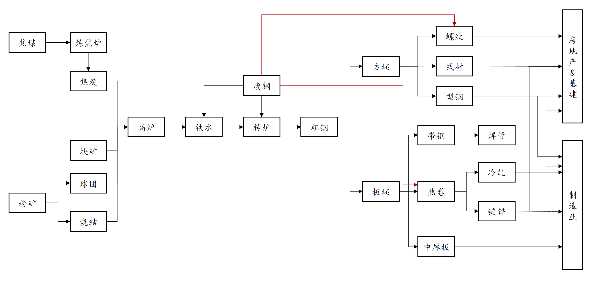
| 螺纹基本面数据变化 | ||
|---|---|---|
| 指标 | 周度变化 | |
| 消息面 | 消息 | 无 |
| 供给 | 实际产量 | 全样本螺纹产量-1.82，短流程产量-2.68，短流程废钢日耗+0.35 多：产量低位震荡 |
| 计划产量 | 短期检修下周长流程产量+0.85；11月产量调研，SMM排产+4，日产量+1 | |
| 转产—钢坯 | 唐山钢坯库存+5，钢坯出口利润136（+51），土耳其废钢-钢坯-41（+4），钢坯月度出口161（-32）；钢坯Bid 455（3035），钢坯Offer 460（3069） | |
| 需求 | 表观需求 | 全样本螺纹表需+2.57 空：专项债用于黑色领域的金额同比下降 空：杭州出库节后偏差 |
| 采购／销售活跃度 | 建材直供7.10（-0.75），建材成交7.8（-0.1） | |
| 建筑相关材料 | 水泥开工率-1.2%，水泥出库+6，混凝土发运-7 | |
| 房地产 | 土地成交偏弱，新开工-17.95%，销售-20.69%；高频商品房销售同比一致、二手房销售有所好转 | |
| 基建 | 专项债用于黑色领域的比例有所回升；基建投资：固投转负 | |
| 库存 | 全样本库存 | 全样本库存-19.18 |
| 价差／利润 | 区域价差 | 华东-华北：90→130；华南-华东：157→148；西南-华东：140→120 |
| 利润 | ①长流程利润：华东67（+24）；②短流程利润：华东谷电69（+12）；沙钢废钢日到货：1.35 | |
| 估值 | 基差 | ①北京敬业-01：11（-4）；②杭州中新-01：91（+36）；③广州广钢-01：121（+16）；④徐钢仓单-01：71（+6） |
| 月差 | 01-05月差19（+21） | |
| 仓单 | 10058（-20160） | |
| 热卷基本面数据变化 | ||
|---|---|---|
| 指标 | 周度变化 | |
| 消息面 | 消息 | |
| 供给 | 实际产量 | 全样本热卷产量+7.75 |
| 唐山接单 | 成交量MA5 14.8（-2.7） | |
| 计划产量 | 短期检修下周产量-7.13；11月产量调研，SMM排产+0，日产量-1 | |
| 转产—带钢 | ①钢联数据：产增需增库降；②价差：唐山热卷-带钢价差70（+0）；③下游焊管：钢联数据产增需增库增，天津焊管-带钢190（-20） | |
| 转产—中板 | ①钢联数据：产增需增库降；②价差：邯郸中板-热卷价差160（+10） | |
| 需求 | 表观需求 | 全样本热卷表需+13.12 多：俄乌+伊朗+印度出口下降 空：统计局下游库存维持高位 空：Q4欧盟配额结束，海外价格开始回落 空：冷镀不跟随上涨 |
| 冷轧 | ①钢联数据：产降需增库降；②价差：上海冷热价差390（-10），出口利润114（+32） | |
| 镀锌 | ①钢联数据：产降需降库降；②价差：上海镀锌-热卷价差580（+0），出口利润17（+21） | |
| 制造业 | ①PMI：49.3（-0.8），新订单49.4（-1.1）；②汽车：10月产量yoy-9%，汽车销量yoy-9%，10月出口yoy+34%；③家电：10月产量空yoy-13%，冰-1%，洗+2.4%，出口同比增加，12月排产同比持平 | |
| 出口 | ①热卷出口利润：60（+25），Bid 470（3135），Offer 480（3203）；②东南亚-中国：52（-1）；③SMM：出口294（-43），接单95.4（-9.5）；④海外PMI：主要国家10月均50以上，但环比有所转弱；⑤海关出口：10月出口钢材985（-64）；⑥SMM间接出口：1699（+138） | |
| 库存 | 全样本库存 | 全样本库存-16.82 多：热卷较好 |
| 价差／利润 | 区域价差 | 华东-东北：100→110；华南-华东：10→10；华南-华北：110→120 |
| 利润 | ①长流程利润：华北-40（-24） | |
| 估值 | 基差 | ①纵横仓单-01：55（+19），②江苏沙钢-01：100（+49），③上海安丰-01：30（+29），④乐从-01：60（+29），④品种材基差 |
| 月差 | 01-05月差-11（+7） | |
| 仓单 | 196676（-17087） | |
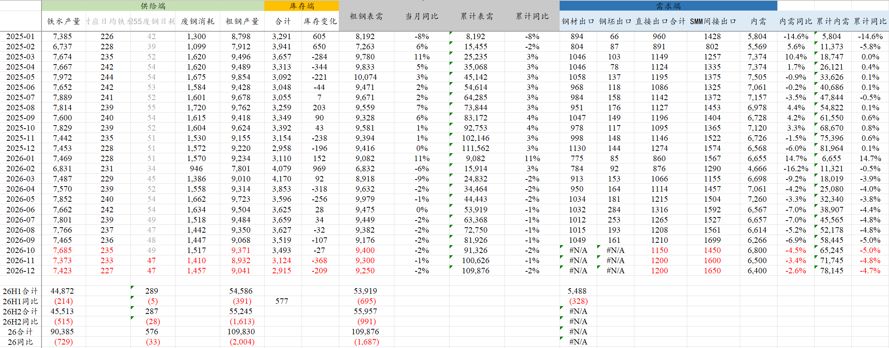
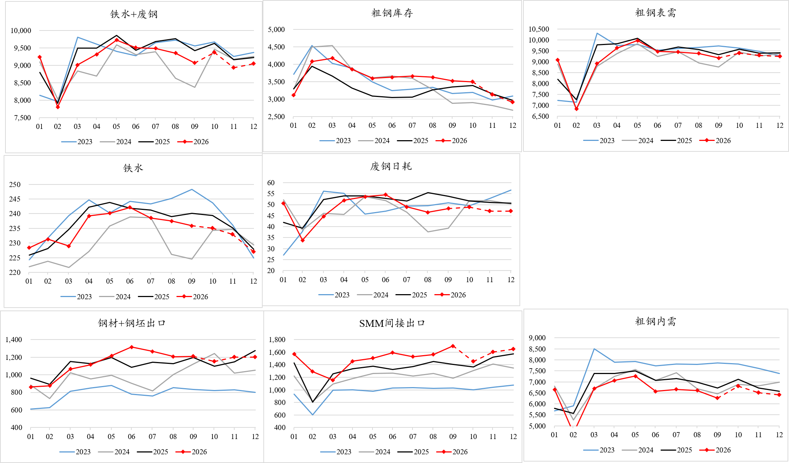
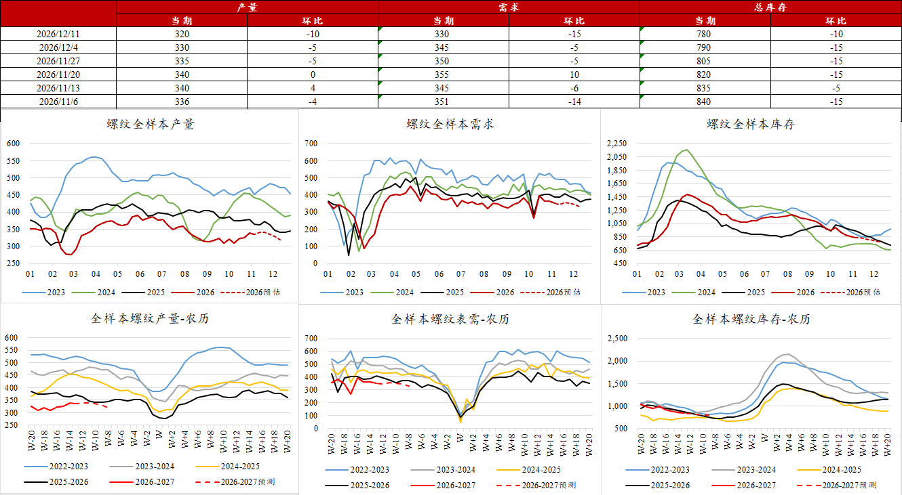
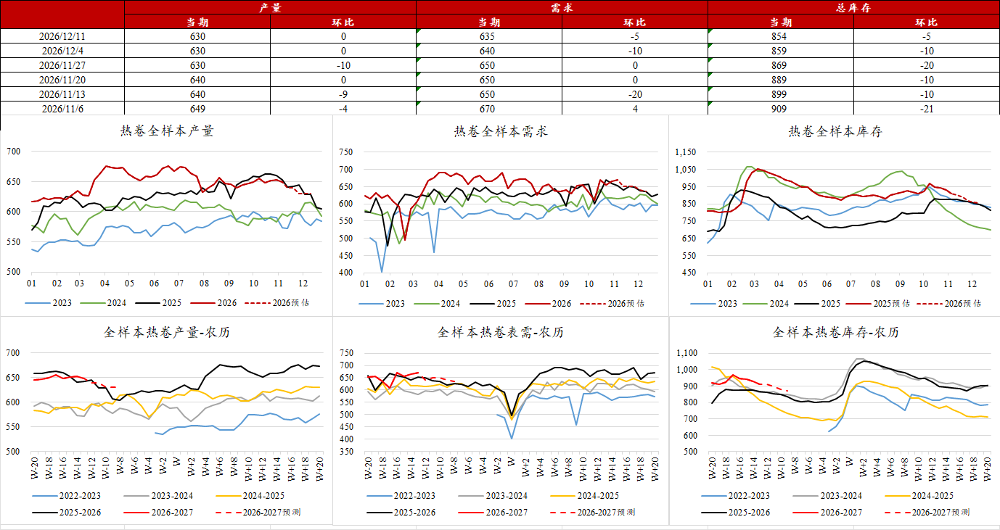
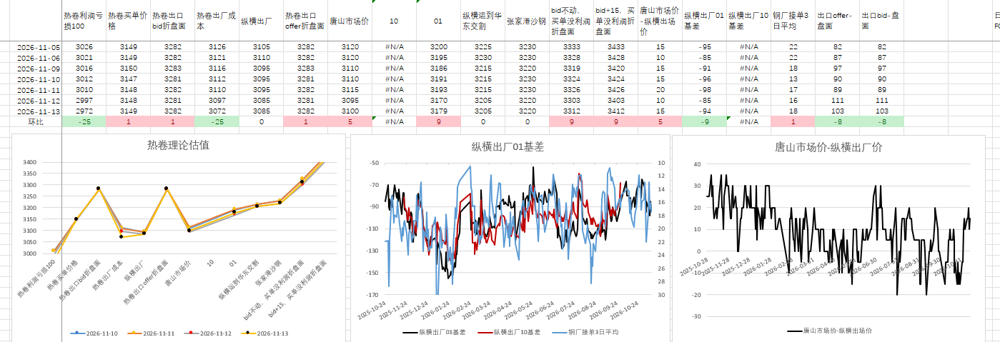
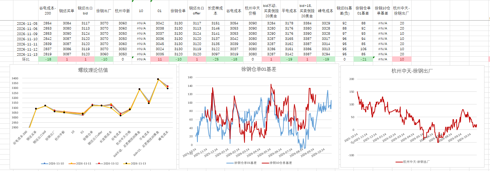
| 指标 | 单位 | 2026-11-18 | 2026-11-19 | 2026-11-20 | 2026-11-23 | 日环比 | 周同比 | 月同比 | 年同比 |
|---|---|---|---|---|---|---|---|---|---|
| 天津 SS400 热卷 FOB | 美元/吨 | 474 | 474 | 472 | 469 | -3 | -9 | -16 | #N/A |
| 越南东盟热卷 CFR | 美元/吨 | 531 | 531 | 531 | 531 | 0 | 0 | -2 | #N/A |
| 印度热卷 FOB | 美元/吨 | 640 | 640 | 635 | 635 | 0 | -5 | -5 | #N/A |
| 孟买热卷出厂价 | 美元/吨 | 680 | 681 | 682 | 683 | +1 | +7 | +17 | #N/A |
| 西北欧热卷出厂价 | 美元/吨 | 851 | 852 | 863 | 859 | -4 | +9 | +21 | #N/A |
| 美国中西部热卷出厂价 | 美元/吨 | 1,363 | 1,363 | 1,363 | 1,363 | 0 | +4 | +64 | #N/A |
| 土耳其 HMS 80:20 废钢 CFR | 美元/吨 | #N/A | #N/A | #N/A | #N/A | #N/A | #N/A | #N/A | #N/A |
| 越南 CFR − 中国 FOB | 美元/吨 | 57 | 57 | 59 | 62 | +3 | +9 | +14 | #N/A |
| 印度 FOB − 中国 FOB | 美元/吨 | 166 | 166 | 163 | 166 | +3 | +4 | +11 | #N/A |
来源：Argus 报价表，经研究 SQL 回读。变动为美元/吨，比较日遇周末回溯至周五。价差按同日两项报价相减，缺值显示 #N/A。土耳其废钢最新报价为 2026-11-10 的 401 美元/吨。
| 分类 | 指标 | 2026/11/17 | 2026/11/18 | 2026/11/19 | 2026/11/20 | 周变动 | 月变动 | 年变动 |
|---|---|---|---|---|---|---|---|---|
| 螺纹钢 | 上海螺纹 | 3130.00 | 3130.00 | 3140.00 | 3160.00 | 0.00 | -70.00 | -50.00 |
| 北京螺纹 | 3030.00 | 3020.00 | 3020.00 | 3030.00 | -40.00 | -120.00 | -190.00 | |
| 天津螺纹 | 3080.00 | 3080.00 | 3080.00 | 3090.00 | -30.00 | -110.00 | -130.00 | |
| 太原螺纹 | 3160.00 | 3160.00 | 3160.00 | 3160.00 | -40.00 | -100.00 | -100.00 | |
| 广州螺纹 | 3400.00 | 3400.00 | 3400.00 | 3410.00 | -10.00 | -20.00 | 10.00 | |
| 无锡螺纹 | 3290.00 | 3290.00 | 3290.00 | 3300.00 | -30.00 | -90.00 | -50.00 | |
| 杭州螺纹 | 3160.00 | 3160.00 | 3170.00 | 3190.00 | 0.00 | -80.00 | -50.00 | |
| 武汉螺纹 | 3320.00 | 3320.00 | 3330.00 | 3340.00 | -30.00 | -40.00 | 50.00 | |
| 沈阳螺纹 | 3160.00 | 3150.00 | 3150.00 | 3160.00 | -30.00 | -60.00 | 0.00 | |
| 石家庄螺纹 | 3140.00 | 3130.00 | 3130.00 | 3140.00 | -40.00 | -90.00 | -130.00 | |
| 西安螺纹 | 3200.00 | 3200.00 | 3200.00 | 3200.00 | -30.00 | -60.00 | -50.00 | |
| 重庆螺纹 | 3280.00 | 3270.00 | 3270.00 | 3290.00 | -20.00 | -30.00 | 90.00 | |
| 热轧板卷 | 上海热卷 | 3160.00 | 3150.00 | 3160.00 | 3170.00 | -30.00 | -80.00 | -100.00 |
| 乐从热卷 | 3170.00 | 3170.00 | 3170.00 | 3180.00 | -30.00 | -60.00 | -110.00 | |
| 天津热卷 | 3080.00 | 3070.00 | 3070.00 | 3070.00 | -50.00 | -120.00 | -140.00 | |
| 杭州热卷 | 3150.00 | 3160.00 | 3180.00 | 3180.00 | -30.00 | -100.00 | -140.00 | |
| 武汉热卷 | 3240.00 | 3240.00 | 3230.00 | 3230.00 | -50.00 | -80.00 | -110.00 | |
| 沈阳热卷 | 3080.00 | 3080.00 | 3080.00 | 3080.00 | -40.00 | -110.00 | -130.00 | |
| 西安热卷 | 3130.00 | 3120.00 | 3120.00 | 3120.00 | -30.00 | -110.00 | -170.00 | |
| 邯郸热卷 | 3080.00 | 3080.00 | 3080.00 | 3080.00 | -40.00 | -120.00 | -140.00 | |
| 重庆热卷 | 3150.00 | 3150.00 | 3160.00 | 3170.00 | -30.00 | -110.00 | -170.00 | |
| 冷轧板卷 | 上海冷卷 | 3570.00 | 3560.00 | 3560.00 | 3560.00 | -40.00 | -90.00 | -230.00 |
| 乐从冷卷 | 3680.00 | 3680.00 | 3680.00 | 3680.00 | -20.00 | -70.00 | -200.00 | |
| 天津冷卷 | 3580.00 | 3580.00 | 3560.00 | 3570.00 | -30.00 | -60.00 | -180.00 | |
| 冷轧基料 | 博兴冷轧基料（Q195L，纵横丰南） | 3130.00 | 3130.00 | 3130.00 | 3140.00 | -40.00 | -90.00 | -150.00 |
| 博兴冷轧基料（SPHC，中铁） | 3140.00 | 3140.00 | 3140.00 | 3150.00 | -40.00 | -90.00 | -150.00 | |
| 普中板 | 乐从普中板 | 3480.00 | 3480.00 | 3480.00 | 3470.00 | -40.00 | -140.00 | -110.00 |
| 邯郸普中板（20mm） | 3190.00 | 3180.00 | 3180.00 | 3180.00 | -60.00 | -240.00 | -120.00 | |
| 热轧带钢 | 乐从带钢 | 3150.00 | 3150.00 | 3150.00 | 3160.00 | -20.00 | -80.00 | -110.00 |
| 唐山带钢 | 2990.00 | 2990.00 | 2990.00 | 2990.00 | -40.00 | -120.00 | -180.00 | |
| 无锡带钢 | 3110.00 | 3110.00 | 3110.00 | 3110.00 | -20.00 | -120.00 | -140.00 |
单位：元/吨。统一观察日：2026-11-20；当日或基期缺值显示#N/A，不沿用旧值。季节图默认2022—2026年，点击年份可显隐，移动鼠标查看实际日期与数值。
| 分类 | 指标 | 2026/11/17 | 2026/11/18 | 2026/11/19 | 2026/11/20 | 周变动 | 月变动 | 年变动 |
|---|---|---|---|---|---|---|---|---|
| 中厚板 | 上海-邯郸普中板 | 40.00 | 50.00 | 40.00 | 40.00 | 30.00 | 60.00 | 10.00 |
| 厦门-邯郸普中板 | 360.00 | 370.00 | 370.00 | 370.00 | 30.00 | 120.00 | 90.00 | |
| 合肥-邯郸普中板 | 80.00 | 90.00 | 80.00 | 80.00 | 30.00 | 60.00 | 30.00 | |
| 天津-邯郸普中板 | -20.00 | -10.00 | -20.00 | -10.00 | 20.00 | 30.00 | 20.00 | |
| 广州-上海普中板 | 250.00 | 250.00 | 260.00 | 250.00 | -10.00 | 40.00 | 0.00 | |
| 广州-沈阳普中板 | 240.00 | 250.00 | 250.00 | 230.00 | -20.00 | 90.00 | 80.00 | |
| 广州-邯郸普中板 | 290.00 | 300.00 | 300.00 | 290.00 | 20.00 | 100.00 | 10.00 | |
| 成都-邯郸普中板 | 190.00 | 190.00 | 190.00 | 190.00 | 30.00 | 130.00 | -20.00 | |
| 沈阳-邯郸普中板 | 50.00 | 50.00 | 50.00 | 60.00 | 40.00 | 10.00 | -70.00 | |
| 西安-邯郸普中板 | 160.00 | 160.00 | 150.00 | 150.00 | 10.00 | 120.00 | 130.00 | |
| 邯郸-乐从普中板 | -290.00 | -300.00 | -300.00 | -290.00 | -20.00 | -100.00 | -10.00 | |
| 青岛-邯郸普中板 | 130.00 | 140.00 | 140.00 | 140.00 | 0.00 | 0.00 | -40.00 | |
| 热卷 | 热卷｜乐从-上海 | 10.00 | 20.00 | 10.00 | 10.00 | 0.00 | 20.00 | -10.00 |
| 热卷｜北京-上海 | -60.00 | -50.00 | -60.00 | -70.00 | -10.00 | -100.00 | -120.00 | |
| 热卷｜合肥-上海 | 80.00 | 90.00 | 80.00 | 70.00 | -10.00 | -30.00 | -40.00 | |
| 热卷｜天津-上海 | -80.00 | -80.00 | -90.00 | -100.00 | -20.00 | -40.00 | -40.00 | |
| 热卷｜天津-广州 | -90.00 | -100.00 | -100.00 | -110.00 | -20.00 | -60.00 | -30.00 | |
| 热卷｜宁波-上海 | -50.00 | -30.00 | -40.00 | -50.00 | -10.00 | -20.00 | -40.00 | |
| 热卷｜张家港-上海 | 10.00 | 20.00 | 30.00 | 50.00 | 20.00 | 10.00 | 20.00 | |
| 热卷｜成都-上海 | 0.00 | 10.00 | 0.00 | 10.00 | 0.00 | -60.00 | -60.00 | |
| 热卷｜无锡-上海 | 0.00 | 20.00 | 10.00 | 10.00 | -20.00 | -40.00 | -70.00 | |
| 热卷｜武汉-上海 | 80.00 | 90.00 | 70.00 | 60.00 | -20.00 | 0.00 | -10.00 | |
| 热卷｜沈阳-上海 | -80.00 | -70.00 | -80.00 | -90.00 | -10.00 | -30.00 | -30.00 | |
| 热卷｜沈阳-广州 | -90.00 | -90.00 | -90.00 | -100.00 | -10.00 | -50.00 | -20.00 | |
| 热卷｜济南-上海 | 30.00 | 40.00 | 40.00 | 30.00 | 20.00 | -20.00 | 0.00 | |
| 热卷｜西安-上海 | -30.00 | -30.00 | -40.00 | -50.00 | 0.00 | -30.00 | -70.00 | |
| 热卷｜邯郸-上海 | -80.00 | -70.00 | -80.00 | -90.00 | -10.00 | -40.00 | -40.00 | |
| 热卷｜重庆-上海 | -10.00 | 0.00 | 0.00 | 0.00 | 0.00 | -30.00 | -70.00 | |
| 螺纹 | 螺纹｜北京-杭州 | -130.00 | -140.00 | -150.00 | -160.00 | -40.00 | -40.00 | -140.00 |
| 螺纹｜南昌-杭州 | 60.00 | 70.00 | 60.00 | 50.00 | -20.00 | 40.00 | 70.00 | |
| 螺纹｜天津-杭州 | -80.00 | -80.00 | -90.00 | -100.00 | -30.00 | -30.00 | -80.00 | |
| 螺纹｜太原-杭州 | 0.00 | 0.00 | -10.00 | -30.00 | -40.00 | -20.00 | -50.00 | |
| 螺纹｜广州-杭州 | 240.00 | 240.00 | 230.00 | 220.00 | -10.00 | 60.00 | 60.00 | |
| 螺纹｜成都-天津 | 190.00 | 180.00 | 180.00 | 190.00 | 10.00 | 80.00 | 210.00 | |
| 螺纹｜成都-太原 | 110.00 | 100.00 | 100.00 | 120.00 | 20.00 | 70.00 | 180.00 | |
| 螺纹｜成都-广州 | -130.00 | -140.00 | -140.00 | -130.00 | -10.00 | -10.00 | 70.00 | |
| 螺纹｜成都-杭州 | 110.00 | 100.00 | 90.00 | 90.00 | -20.00 | 50.00 | 130.00 | |
| 螺纹｜武汉-杭州 | 160.00 | 160.00 | 160.00 | 150.00 | -30.00 | 40.00 | 100.00 | |
| 螺纹｜沈阳-杭州 | 0.00 | -10.00 | -20.00 | -30.00 | -30.00 | 20.00 | 50.00 | |
| 螺纹｜济南-杭州 | 10.00 | 10.00 | 0.00 | -10.00 | -20.00 | -10.00 | -120.00 | |
| 螺纹｜西安-天津 | 120.00 | 120.00 | 120.00 | 110.00 | 0.00 | 50.00 | 80.00 | |
| 螺纹｜西安-太原 | 40.00 | 40.00 | 40.00 | 40.00 | 10.00 | 40.00 | 50.00 | |
| 螺纹｜西安-杭州 | 40.00 | 40.00 | 30.00 | 10.00 | -30.00 | 20.00 | 0.00 | |
| 螺纹｜重庆-天津 | 200.00 | 190.00 | 190.00 | 200.00 | 10.00 | 80.00 | 220.00 | |
| 螺纹｜重庆-太原 | 120.00 | 110.00 | 110.00 | 130.00 | 20.00 | 70.00 | 190.00 | |
| 螺纹｜重庆-广州 | -120.00 | -130.00 | -130.00 | -120.00 | -10.00 | -10.00 | 80.00 | |
| 螺纹｜重庆-杭州 | 120.00 | 110.00 | 100.00 | 100.00 | -20.00 | 50.00 | 140.00 | |
| 钢坯 | 云南-唐山安丰 | 90.00 | 80.00 | 80.00 | 80.00 | 0.00 | 10.00 | 130.00 |
| 天津-唐山安丰 | 50.00 | 40.00 | 50.00 | 50.00 | 0.00 | -10.00 | 20.00 | |
| 山东-唐山安丰 | 135.00 | 115.00 | 115.00 | 115.00 | 0.00 | 30.00 | 45.00 | |
| 广州-唐山安丰 | 100.00 | 90.00 | 90.00 | 80.00 | 20.00 | 60.00 | 110.00 | |
| 江苏-唐山安丰 | 60.00 | 50.00 | 50.00 | 50.00 | 0.00 | 40.00 | 50.00 | |
| 福建-唐山安丰 | 80.00 | 70.00 | 70.00 | 70.00 | 10.00 | 70.00 | 90.00 | |
| 辽宁-唐山安丰 | 10.00 | -10.00 | -10.00 | -10.00 | 20.00 | -10.00 | 50.00 |
单位：元/吨。统一观察日：2026-11-20；当日或基期缺值显示#N/A，不沿用旧值。季节图默认2022—2026年，点击年份可显隐，移动鼠标查看实际日期与数值。
| 分类 | 指标 | 2026/11/17 | 2026/11/18 | 2026/11/19 | 2026/11/20 | 周变动 | 月变动 | 年变动 |
|---|---|---|---|---|---|---|---|---|
| 中厚板 | 上海普中板-上海高线 | -350.00 | -350.00 | -370.00 | -390.00 | -40.00 | -120.00 | -100.00 |
| 上海普中板-唐山钢坯 | 420.00 | 420.00 | 410.00 | 410.00 | 20.00 | -50.00 | 20.00 | |
| 上海普中板-无锡带钢 | 120.00 | 120.00 | 110.00 | 110.00 | -10.00 | -60.00 | 30.00 | |
| 上海普中板-杭州螺纹 | 70.00 | 70.00 | 50.00 | 30.00 | -30.00 | -100.00 | -60.00 | |
| 广州普中板-乐从带钢 | 330.00 | 330.00 | 330.00 | 310.00 | -20.00 | -60.00 | 0.00 | |
| 广州普中板-唐山钢坯 | 670.00 | 670.00 | 670.00 | 660.00 | 10.00 | -10.00 | 20.00 | |
| 广州普中板-广州螺纹 | 80.00 | 80.00 | 80.00 | 60.00 | -30.00 | -120.00 | -120.00 | |
| 广州普中板-广州高线 | -220.00 | -220.00 | -220.00 | -240.00 | -30.00 | -100.00 | -120.00 | |
| 邯郸普中板-北京螺纹 | 160.00 | 160.00 | 160.00 | 150.00 | -20.00 | -120.00 | 70.00 | |
| 邯郸普中板-唐山带钢 | 200.00 | 190.00 | 190.00 | 190.00 | -20.00 | -120.00 | 60.00 | |
| 邯郸普中板-唐山钢坯 | 380.00 | 370.00 | 370.00 | 370.00 | -10.00 | -110.00 | 10.00 | |
| 邯郸普中板-邯郸高线 | -130.00 | -140.00 | -140.00 | -140.00 | -20.00 | -140.00 | -20.00 | |
| 热卷 | 上海冷热价差 | 410.00 | 410.00 | 400.00 | 390.00 | -10.00 | -10.00 | -130.00 |
| 上海普中板-上海热卷 | 70.00 | 80.00 | 60.00 | 50.00 | 0.00 | -100.00 | -10.00 | |
| 上海热卷-无锡带钢 | 50.00 | 40.00 | 50.00 | 60.00 | -10.00 | 40.00 | 40.00 | |
| 乐从冷热价差 | 510.00 | 510.00 | 510.00 | 500.00 | 10.00 | -10.00 | -90.00 | |
| 乐从普中板-乐从热卷 | 310.00 | 310.00 | 310.00 | 290.00 | -10.00 | -80.00 | 0.00 | |
| 乐从热卷-乐从带钢 | 20.00 | 20.00 | 20.00 | 20.00 | -10.00 | 20.00 | 0.00 | |
| 博兴基料-博兴普碳 | 10.00 | 10.00 | 10.00 | 10.00 | 0.00 | 0.00 | -40.00 | |
| 唐山带钢-唐山钢坯 | 180.00 | 180.00 | 180.00 | 180.00 | 10.00 | 10.00 | -50.00 | |
| 天津冷热价差 | 500.00 | 510.00 | 490.00 | 500.00 | 20.00 | 60.00 | -40.00 | |
| 天津冷轧-博兴基料 | 440.00 | 440.00 | 420.00 | 420.00 | 10.00 | 30.00 | -30.00 | |
| 天津热卷-唐山带钢 | 90.00 | 80.00 | 80.00 | 80.00 | -10.00 | 0.00 | 40.00 | |
| 无锡带钢-唐山钢坯 | 300.00 | 300.00 | 300.00 | 300.00 | 30.00 | 10.00 | -10.00 | |
| 无锡带钢-江苏钢坯 | 190.00 | 190.00 | 190.00 | 180.00 | 20.00 | -40.00 | -60.00 | |
| 螺纹 | 螺纹｜天津：河北敬业-东华 | 20.00 | 20.00 | 20.00 | 20.00 | 0.00 | 0.00 | 0.00 |
| 螺纹｜广州：广钢-广州宝丰 | 230.00 | 220.00 | 220.00 | 220.00 | -10.00 | -20.00 | 10.00 | |
| 螺纹｜杭州：中天-鸿泰 | 60.00 | 60.00 | 60.00 | 60.00 | 0.00 | 0.00 | -20.00 | |
| 钢材品种 | 上海拉丝材-上海螺纹 | 20.00 | 20.00 | 10.00 | 0.00 | -20.00 | 10.00 | 10.00 |
| 北京热卷-北京螺纹 | 70.00 | 80.00 | 80.00 | 70.00 | 0.00 | -60.00 | -30.00 | |
| 北京盘螺-北京螺纹 | 360.00 | 370.00 | 370.00 | 360.00 | 40.00 | 70.00 | 140.00 | |
| 北京螺纹-唐山带钢 | 40.00 | 30.00 | 30.00 | 40.00 | 0.00 | 0.00 | -10.00 | |
| 北京螺纹-唐山钢坯 | 220.00 | 210.00 | 210.00 | 220.00 | 10.00 | 10.00 | -60.00 | |
| 北京螺纹-唐山高线 | -240.00 | -230.00 | -230.00 | -240.00 | -10.00 | -50.00 | -120.00 | |
| 天津拉丝材-北京螺纹 | 240.00 | 250.00 | 250.00 | 250.00 | 30.00 | 70.00 | 160.00 | |
| 广州拉丝材-广州螺纹 | -120.00 | -120.00 | -120.00 | -130.00 | -10.00 | -30.00 | -20.00 | |
| 广州热卷-广州螺纹 | -220.00 | -220.00 | -220.00 | -220.00 | -20.00 | -40.00 | -120.00 | |
| 广州盘螺-广州螺纹 | 170.00 | 170.00 | 170.00 | 170.00 | 0.00 | -20.00 | -10.00 | |
| 广州螺纹-广州带钢 | 370.00 | 370.00 | 370.00 | 370.00 | 10.00 | 60.00 | 130.00 | |
| 广州螺纹-广州高线 | -300.00 | -300.00 | -300.00 | -300.00 | 0.00 | 20.00 | 0.00 | |
| 杭州拉丝材-杭州螺纹 | 30.00 | 30.00 | 20.00 | 0.00 | -40.00 | -10.00 | -20.00 | |
| 杭州热卷-杭州螺纹 | -10.00 | 0.00 | 10.00 | -10.00 | -30.00 | -20.00 | -90.00 | |
| 杭州盘螺-杭州螺纹 | 220.00 | 220.00 | 230.00 | 230.00 | 10.00 | 10.00 | 80.00 | |
| 杭州螺纹-上海高线 | -420.00 | -420.00 | -420.00 | -420.00 | -10.00 | -20.00 | -40.00 | |
| 杭州螺纹-唐山带钢 | 170.00 | 170.00 | 180.00 | 200.00 | 40.00 | 40.00 | 130.00 | |
| 杭州螺纹-唐山钢坯 | 350.00 | 350.00 | 360.00 | 380.00 | 50.00 | 50.00 | 80.00 | |
| 杭州螺纹-无锡带钢 | 40.00 | 40.00 | 50.00 | 70.00 | 20.00 | 40.00 | 80.00 | |
| 杭州螺纹-江阴钢坯 | 240.00 | 240.00 | 250.00 | 260.00 | 40.00 | 0.00 | 30.00 | |
| 沈阳热卷-沈阳螺纹 | -80.00 | -70.00 | -70.00 | -80.00 | -10.00 | -50.00 | -130.00 | |
| 沈阳盘螺-沈阳螺纹 | 250.00 | 250.00 | 250.00 | 240.00 | 0.00 | -10.00 | 90.00 | |
| 沈阳螺纹-沈阳高线 | -390.00 | -390.00 | -390.00 | -380.00 | 0.00 | -50.00 | -20.00 | |
| 济南热卷-济南螺纹 | 20.00 | 20.00 | 30.00 | 20.00 | 10.00 | -10.00 | 70.00 | |
| 石家庄螺纹-唐山钢坯 | 330.00 | 320.00 | 320.00 | 330.00 | 10.00 | 40.00 | 0.00 |
单位：元/吨。统一观察日：2026-11-20；当日或基期缺值显示#N/A，不沿用旧值。季节图默认2022—2026年，点击年份可显隐，移动鼠标查看实际日期与数值。
| 分类 | 指标 | 2026/11/17 | 2026/11/18 | 2026/11/19 | 2026/11/20 | 周变动 | 月变动 | 年变动 |
|---|---|---|---|---|---|---|---|---|
| 利润 | 01热卷盘面利润 | -179.80 | -169.85 | -169.80 | -199.25 | -22.05 | -75.35 | -87.90 |
| 01焦企盘面利润 | -144.28 | -104.90 | -122.93 | -95.45 | 37.20 | 17.05 | -65.72 | |
| 01螺纹盘面利润 | -173.80 | -154.85 | -150.80 | -170.25 | 0.95 | -35.35 | 8.10 | |
| 05热卷盘面利润 | -84.85 | -78.55 | -93.45 | -100.15 | -8.15 | -41.80 | 24.40 | |
| 05焦企盘面利润 | -71.45 | -51.95 | -62.45 | -52.95 | 31.83 | 4.83 | -80.08 | |
| 05螺纹盘面利润 | -96.85 | -89.55 | -101.45 | -101.15 | 0.85 | -27.80 | 46.40 | |
| 09焦企盘面利润 | -87.23 | -77.00 | -79.10 | -50.83 | 38.75 | 31.88 | -53.33 | |
| 10热卷盘面利润 | -69.80 | -63.85 | -77.25 | -85.95 | -8.90 | -61.45 | 20.85 | |
| 10螺纹盘面利润 | -67.80 | -54.85 | -68.25 | -79.95 | -1.90 | -45.45 | 16.85 | |
| 热卷主力盘面利润 | -229.80 | -219.85 | -219.80 | -249.25 | -22.05 | -75.35 | -87.90 | |
| 焦企主力盘面利润 | -144.28 | -104.90 | -122.93 | -95.45 | 37.20 | 17.05 | -65.72 | |
| 螺纹主力盘面利润 | -223.80 | -204.85 | -200.80 | -220.25 | 0.95 | -35.35 | 8.10 | |
| 月差 | J01-05 | 115.50 | 105.00 | 99.50 | 133.00 | 29.00 | 61.50 | 283.00 |
| J05-09 | -33.50 | -33.00 | -36.00 | -46.00 | 0.50 | -36.50 | 20.50 | |
| J09-01 | -82.00 | -72.00 | -63.50 | -87.00 | -29.50 | -25.00 | -303.50 | |
| JM01-05 | 139.50 | 117.00 | 118.50 | 130.00 | 17.50 | 36.50 | 199.00 | |
| JM05-09 | -36.50 | -43.00 | -39.00 | -32.50 | 5.50 | -7.00 | 35.00 | |
| JM09-01 | -103.00 | -74.00 | -79.50 | -97.50 | -23.00 | -29.50 | -234.00 | |
| 热卷01-05 | -22.00 | -18.00 | -9.00 | -11.00 | 7.00 | 6.00 | -6.00 | |
| 热卷05-10 | -19.00 | -16.00 | -19.00 | -22.00 | 1.00 | 3.00 | -11.00 | |
| 热卷10-01 | 41.00 | 34.00 | 28.00 | 33.00 | -8.00 | -9.00 | 17.00 | |
| 螺纹01-05 | -4.00 | 8.00 | 18.00 | 19.00 | 21.00 | 32.00 | 68.00 | |
| 螺纹05-10 | -33.00 | -36.00 | -36.00 | -29.00 | 3.00 | 1.00 | 15.00 | |
| 螺纹10-01 | 37.00 | 28.00 | 18.00 | 10.00 | -24.00 | -33.00 | -83.00 | |
| 盘面比价及卷螺差 | 01卷螺差 | 144.00 | 135.00 | 131.00 | 121.00 | -23.00 | -40.00 | -96.00 |
| 05卷螺差 | 162.00 | 161.00 | 158.00 | 151.00 | -9.00 | -14.00 | -22.00 | |
| 10卷螺差 | 148.00 | 141.00 | 141.00 | 144.00 | -7.00 | -16.00 | 4.00 | |
| 卷焦比 | 1.61 | 1.64 | 1.64 | 1.60 | -0.01 | -0.06 | -0.40 | |
| 卷煤比 | 2.19 | 2.28 | 2.26 | 2.23 | 0.02 | -0.07 | -0.70 | |
| 卷矿比 | 4.85 | 4.82 | 4.81 | 4.78 | 0.03 | 0.02 | 0.64 | |
| 焦煤比 | 1.36 | 1.39 | 1.38 | 1.40 | 0.03 | 0.01 | -0.07 | |
| 煤矿比 | 2.21 | 2.11 | 2.12 | 2.14 | -0.01 | 0.07 | 0.73 | |
| 螺焦比 | 1.54 | 1.57 | 1.57 | 1.54 | -0.00 | -0.04 | -0.33 | |
| 螺煤比 | 2.09 | 2.18 | 2.17 | 2.15 | 0.04 | -0.04 | -0.59 | |
| 螺矿比 | 4.63 | 4.61 | 4.60 | 4.60 | 0.06 | 0.08 | 0.73 |
| 分类 | 指标 | 2026/11/17 | 2026/11/18 | 2026/11/19 | 2026/11/20 | 周变动 | 月变动 | 年变动 |
|---|---|---|---|---|---|---|---|---|
| 中厚板 | 上海普中板-热卷01 | 121.00 | 118.00 | 106.00 | 100.00 | 29.00 | -58.00 | 37.00 |
| 上海普中板-热卷05 | 99.00 | 100.00 | 97.00 | 89.00 | 36.00 | -52.00 | 31.00 | |
| 上海普中板-热卷10 | 80.00 | 84.00 | 78.00 | 67.00 | 37.00 | -49.00 | 20.00 | |
| 上海普中板-螺纹01 | 265.00 | 253.00 | 237.00 | 221.00 | 6.00 | -98.00 | -59.00 | |
| 上海普中板-螺纹05 | 261.00 | 261.00 | 255.00 | 240.00 | 27.00 | -66.00 | 9.00 | |
| 上海普中板-螺纹10 | 228.00 | 225.00 | 219.00 | 211.00 | 30.00 | -65.00 | 24.00 | |
| 广州普中板-热卷01 | 371.00 | 368.00 | 366.00 | 350.00 | 19.00 | -18.00 | 37.00 | |
| 广州普中板-热卷05 | 349.00 | 350.00 | 357.00 | 339.00 | 26.00 | -12.00 | 31.00 | |
| 广州普中板-热卷10 | 330.00 | 334.00 | 338.00 | 317.00 | 27.00 | -9.00 | 20.00 | |
| 广州普中板-螺纹01 | 515.00 | 503.00 | 497.00 | 471.00 | -4.00 | -58.00 | -59.00 | |
| 广州普中板-螺纹05 | 511.00 | 511.00 | 515.00 | 490.00 | 17.00 | -26.00 | 9.00 | |
| 广州普中板-螺纹10 | 478.00 | 475.00 | 479.00 | 461.00 | 20.00 | -25.00 | 24.00 | |
| 邯郸普中板-热卷01 | 81.00 | 68.00 | 66.00 | 60.00 | -1.00 | -118.00 | 27.00 | |
| 邯郸普中板-热卷05 | 59.00 | 50.00 | 57.00 | 49.00 | 6.00 | -112.00 | 21.00 | |
| 邯郸普中板-热卷10 | 40.00 | 34.00 | 38.00 | 27.00 | 7.00 | -109.00 | 10.00 | |
| 邯郸普中板-螺纹01 | 225.00 | 203.00 | 197.00 | 181.00 | -24.00 | -158.00 | -69.00 | |
| 邯郸普中板-螺纹05 | 221.00 | 211.00 | 215.00 | 200.00 | -3.00 | -126.00 | -1.00 | |
| 邯郸普中板-螺纹10 | 188.00 | 175.00 | 179.00 | 171.00 | 0.00 | -125.00 | 14.00 | |
| 热卷 | 热卷01基差（上海） | 51.00 | 38.00 | 46.00 | 50.00 | 29.00 | 42.00 | 47.00 |
| 热卷01基差（乐从） | 61.00 | 58.00 | 56.00 | 60.00 | 29.00 | 62.00 | 37.00 | |
| 热卷01基差（天津） | 61.00 | 48.00 | 46.00 | 40.00 | 9.00 | 2.00 | 7.00 | |
| 热卷05基差（上海） | 29.00 | 20.00 | 37.00 | 39.00 | 36.00 | 48.00 | 41.00 | |
| 热卷05基差（乐从） | 39.00 | 40.00 | 47.00 | 49.00 | 36.00 | 68.00 | 31.00 | |
| 热卷05基差（天津） | 39.00 | 30.00 | 37.00 | 29.00 | 16.00 | 8.00 | 1.00 | |
| 热卷10基差（上海） | 10.00 | 4.00 | 18.00 | 17.00 | 37.00 | 51.00 | 30.00 | |
| 热卷10基差（乐从） | 20.00 | 24.00 | 28.00 | 27.00 | 37.00 | 71.00 | 20.00 | |
| 热卷10基差（天津） | 20.00 | 14.00 | 18.00 | 7.00 | 17.00 | 11.00 | -10.00 | |
| 螺纹 | 螺纹01基差（北京） | 245.90 | 223.60 | 217.60 | 211.90 | -5.20 | -41.60 | -144.70 |
| 螺纹01基差（广州） | 537.00 | 525.00 | 519.00 | 513.30 | 25.70 | 61.40 | 61.30 | |
| 螺纹01基差（杭州） | 289.80 | 277.80 | 282.10 | 286.70 | 36.00 | -0.40 | -0.50 | |
| 螺纹05基差（北京） | 241.90 | 231.60 | 235.60 | 230.90 | 15.80 | -9.60 | -76.70 | |
| 螺纹05基差（广州） | 533.00 | 533.00 | 537.00 | 532.30 | 46.70 | 93.40 | 129.30 | |
| 螺纹05基差（杭州） | 285.80 | 285.80 | 300.10 | 305.70 | 57.00 | 31.60 | 67.50 | |
| 螺纹10基差（北京） | 208.90 | 195.60 | 199.60 | 201.90 | 18.80 | -8.60 | -61.70 | |
| 螺纹10基差（广州） | 500.00 | 497.00 | 501.00 | 503.30 | 49.70 | 94.40 | 144.30 | |
| 螺纹10基差（杭州） | 252.80 | 249.80 | 264.10 | 276.70 | 60.00 | 32.60 | 82.50 | |
| 钢坯 | 唐山安丰-01螺纹 | -105.00 | -107.00 | -113.00 | -119.00 | -4.00 | -38.00 | -79.00 |
| 唐山安丰-05螺纹 | -109.00 | -99.00 | -95.00 | -100.00 | 17.00 | -6.00 | -11.00 | |
| 唐山安丰-10螺纹 | -142.00 | -135.00 | -131.00 | -129.00 | 20.00 | -5.00 | 4.00 |
单位：元/吨。统一观察日：2026-11-20；当日或基期缺值显示#N/A，不沿用旧值。季节图默认2022—2026年，点击年份可显隐，移动鼠标查看实际日期与数值。
| 指标 | 单位 | 2026-11-18 | 2026-11-19 | 2026-11-20 | 2026-11-23 | 日变动 |
|---|---|---|---|---|---|---|
| 电炉螺纹含税成本：广东：峰电 | 元/吨 | 3,382.00 | 3,378.00 | 3,378.00 | 3,361.00 | -17.00 |
| 电炉螺纹含税成本：广东：平电 | 元/吨 | 3,212.00 | 3,208.00 | 3,208.00 | 3,191.00 | -17.00 |
| 电炉螺纹含税成本：广东：谷电 | 元/吨 | 3,062.00 | 3,058.00 | 3,058.00 | 3,041.00 | -17.00 |
| 电炉螺纹含税成本：江苏：峰电 | 元/吨 | 3,248.00 | 3,245.00 | 3,246.00 | 3,245.00 | -1.00 |
| 电炉螺纹含税成本：江苏：平电 | 元/吨 | 3,096.00 | 3,093.00 | 3,094.00 | 3,093.00 | -1.00 |
| 电炉螺纹含税成本：江苏：谷电 | 元/吨 | 2,973.00 | 2,969.00 | 2,971.00 | 2,969.00 | -2.00 |
| 电炉利润：江苏：峰电 | 元/吨 | -218.00 | -235.00 | -206.00 | -195.00 | +11.00 |
| 电炉利润：江苏：平电 | 元/吨 | -66.00 | -83.00 | -54.00 | -43.00 | +11.00 |
| 电炉利润：江苏：谷电 | 元/吨 | 57.00 | 41.00 | 69.00 | 81.00 | +12.00 |
季节性截至 2026-11-23 · 来源：富宝
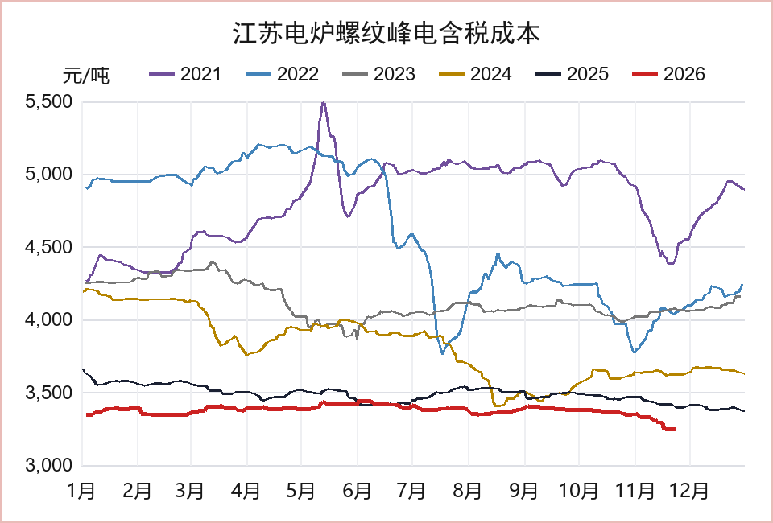
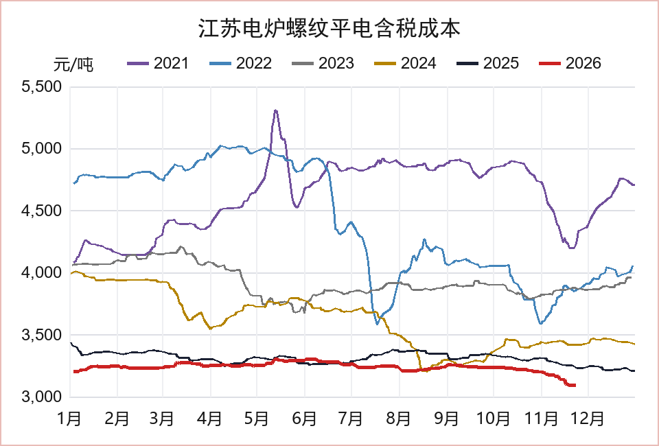
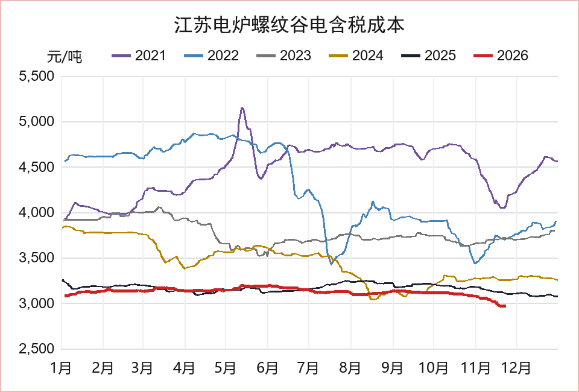
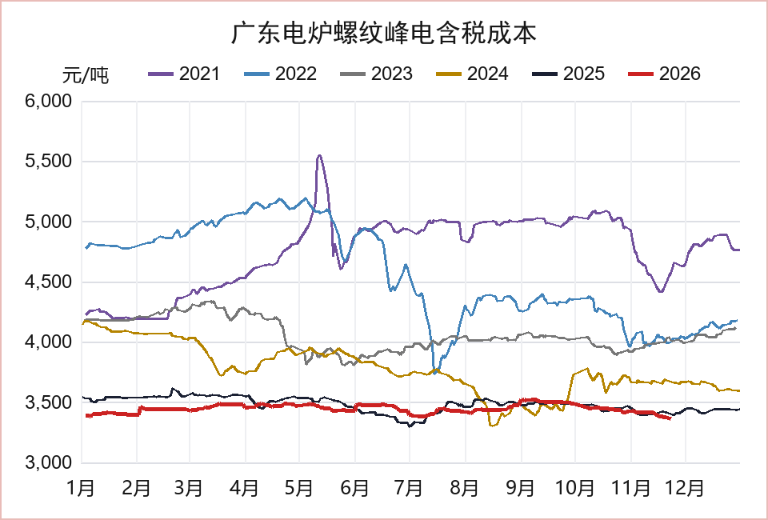
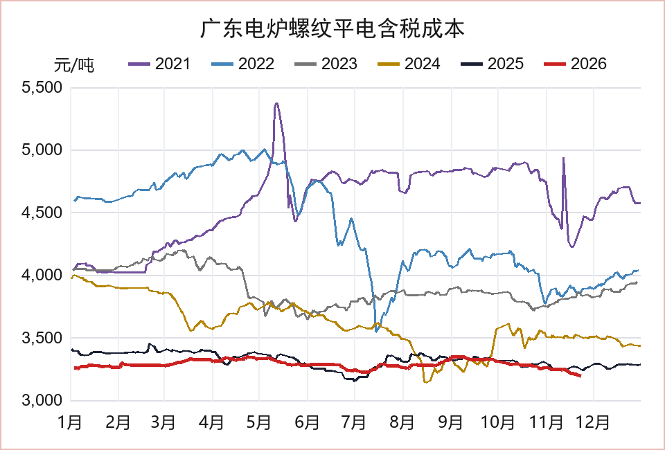
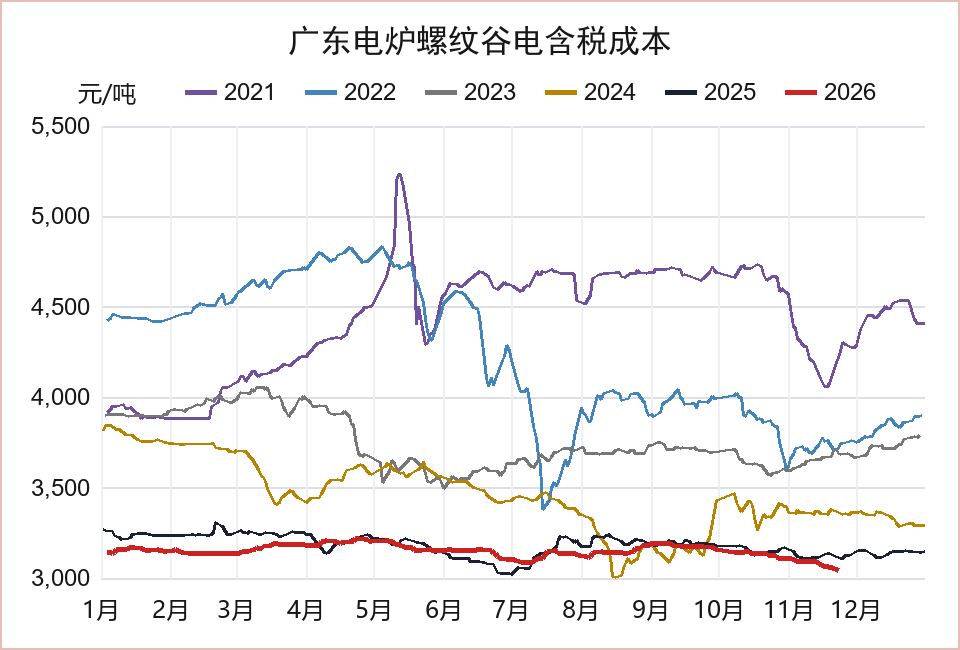
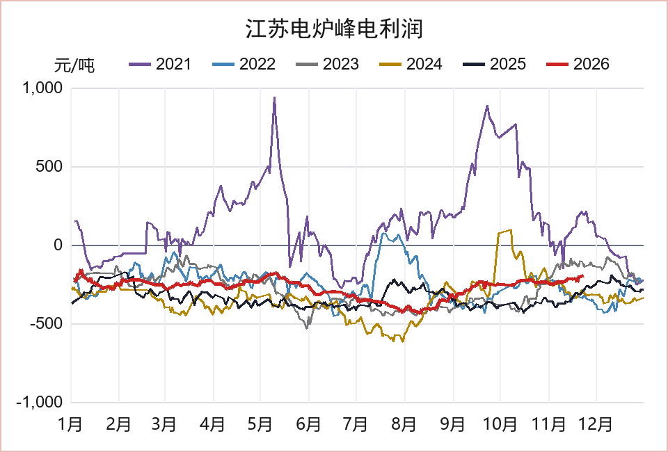
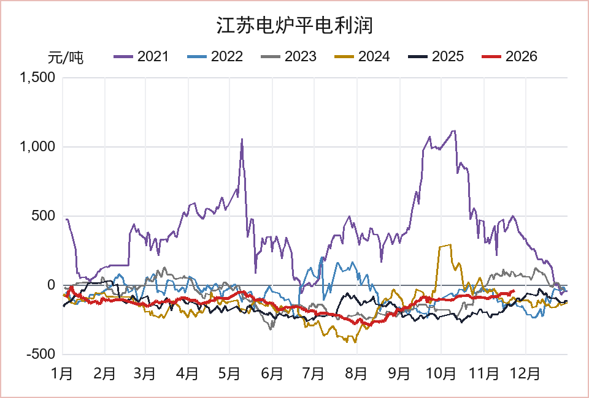
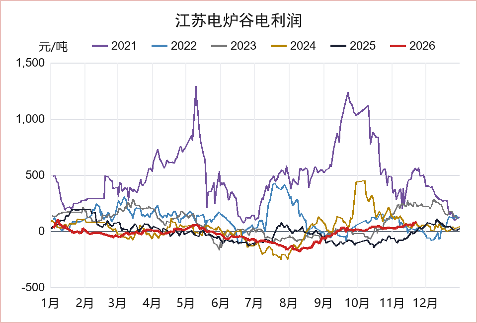
| 指标 | 单位 | 2026-11-18 | 2026-11-19 | 2026-11-20 | 2026-11-23 | 日变动 |
|---|---|---|---|---|---|---|
| 谷电含税成本 | 元/吨 | 2,910.20 | 2,910.20 | 2,910.21 | 2,909.19 | -1.02 |
| 平电含税成本 | 元/吨 | 3,033.17 | 3,033.17 | 3,033.17 | 3,032.15 | -1.02 |
| 谷电利润 | 元/吨 | 189.80 | 199.80 | 219.79 | 210.81 | -8.98 |
| 平电利润 | 元/吨 | 66.83 | 76.83 | 96.83 | 87.85 | -8.98 |
| 指标 | 单位 | 2026-11-18 | 2026-11-19 | 2026-11-20 | 2026-11-23 | 日变动 |
|---|---|---|---|---|---|---|
| 长流程螺纹含税成本（15%废钢比）：江苏 | 元/吨 | 3,109.00 | 3,103.00 | 3,110.00 | 3,098.00 | -12.00 |
| 铁水即时成本不含税：华东 | 元/吨 | 2,207.00 | 2,203.00 | 2,211.00 | 2,201.00 | -10.00 |
理论公式按 20% 废钢计。钢坯成本中铁水成本×0.83，废钢价格×0.20÷0.93×1.11。
| 地区 | 品种 | 单位 | 2026-11-18 | 2026-11-19 | 2026-11-20 | 2026-11-23 |
|---|---|---|---|---|---|---|
| 华北 | 钢坯 | 元/吨 | -99.73 | -103.48 | -97.73 | -100.45 |
| 螺纹 | 元/吨 | -64.54 | -68.29 | -62.22 | -74.67 | |
| 热卷 | 元/吨 | -50.53 | -54.28 | -48.53 | -71.25 | |
| 带钢 | 元/吨 | -115.33 | -119.08 | -123.33 | -136.05 | |
| 冷轧 | 元/吨 | -74.23 | -77.98 | -82.23 | -84.95 | |
| 华东 | 钢坯 | 元/吨 | +17.86 | +16.64 | +26.89 | +27.28 |
| 螺纹 | 元/吨 | +12.40 | +21.17 | +41.75 | +32.40 | |
| 热卷 | 元/吨 | +177.06 | +195.84 | +196.09 | +196.48 | |
| 带钢 | 元/吨 | +49.66 | +48.44 | +58.69 | +49.08 | |
| 冷轧 | 元/吨 | -36.64 | -37.86 | -37.61 | -47.22 | |
| 华南 | 钢坯 | 元/吨 | #N/A | #N/A | #N/A | #N/A |
| 螺纹 | 元/吨 | #N/A | #N/A | #N/A | +223.95 | |
| 热卷 | 元/吨 | #N/A | #N/A | #N/A | +308.48 | |
| 带钢 | 元/吨 | #N/A | #N/A | #N/A | +11.08 | |
| 冷轧 | 元/吨 | #N/A | #N/A | #N/A | -135.22 | |
| 西南 | 钢坯 | 元/吨 | -78.78 | -80.01 | -73.65 | -53.44 |
| 螺纹 | 元/吨 | +66.16 | +64.93 | +81.36 | +91.73 | |
| 热卷 | 元/吨 | +200.42 | +209.19 | +215.55 | +225.76 | |
| 带钢 | 元/吨 | +53.02 | +51.79 | +48.15 | +68.36 | |
| 冷轧 | 元/吨 | -83.28 | -84.51 | -88.15 | -77.94 | |
| 东北 | 钢坯 | 元/吨 | -199.28 | -200.51 | -194.19 | -188.69 |
| 螺纹 | 元/吨 | -51.35 | -52.57 | -55.93 | -50.17 | |
| 热卷 | 元/吨 | -155.28 | -156.51 | -160.19 | -174.69 | |
| 带钢 | 元/吨 | #N/A | #N/A | #N/A | #N/A | |
| 冷轧 | 元/吨 | -13.78 | -15.01 | -18.69 | -33.19 | |
| 华中 | 钢坯 | 元/吨 | -94.37 | -97.47 | -88.45 | -87.58 |
| 螺纹 | 元/吨 | +140.21 | +147.11 | +166.45 | +157.53 | |
| 热卷 | 元/吨 | +64.83 | +61.73 | +60.75 | +61.62 | |
| 带钢 | 元/吨 | -12.57 | -15.67 | -16.65 | -15.78 | |
| 冷轧 | 元/吨 | -118.87 | -121.97 | -122.95 | -132.08 |
缺地区现货报价。
| 地区 | 品种 | 单位 | 2026-11-18 | 2026-11-19 | 2026-11-20 | 2026-11-23 |
|---|---|---|---|---|---|---|
| 华北 | 钢坯 | 元/吨 | 2,969.73 | 2,973.48 | 2,977.73 | 2,980.45 |
| 螺纹 | 元/吨 | 3,144.54 | 3,148.29 | 3,152.22 | 3,154.67 | |
| 热卷 | 元/吨 | 3,150.53 | 3,154.28 | 3,158.53 | 3,161.25 | |
| 带钢 | 元/吨 | 3,105.33 | 3,109.08 | 3,113.33 | 3,116.05 | |
| 冷轧 | 元/吨 | 3,704.23 | 3,707.98 | 3,712.23 | 3,714.95 | |
| 华东 | 钢坯 | 元/吨 | 2,972.14 | 2,973.36 | 2,973.11 | 2,972.72 |
| 螺纹 | 元/吨 | 3,147.60 | 3,148.83 | 3,148.25 | 3,147.60 | |
| 热卷 | 元/吨 | 3,152.94 | 3,154.16 | 3,153.91 | 3,153.52 | |
| 带钢 | 元/吨 | 3,130.34 | 3,131.56 | 3,131.31 | 3,130.92 | |
| 冷轧 | 元/吨 | 3,706.64 | 3,707.86 | 3,707.61 | 3,707.22 | |
| 华南 | 钢坯 | 元/吨 | #N/A | #N/A | #N/A | 2,970.72 |
| 螺纹 | 元/吨 | #N/A | #N/A | #N/A | 3,146.05 | |
| 热卷 | 元/吨 | #N/A | #N/A | #N/A | 3,151.52 | |
| 带钢 | 元/吨 | #N/A | #N/A | #N/A | 3,128.92 | |
| 冷轧 | 元/吨 | #N/A | #N/A | #N/A | 3,705.22 | |
| 西南 | 钢坯 | 元/吨 | 3,028.78 | 3,030.01 | 3,033.65 | 3,013.44 |
| 螺纹 | 元/吨 | 3,203.84 | 3,205.07 | 3,208.64 | 3,188.27 | |
| 热卷 | 元/吨 | 3,209.58 | 3,210.81 | 3,214.45 | 3,194.24 | |
| 带钢 | 元/吨 | 3,186.98 | 3,188.21 | 3,191.85 | 3,171.64 | |
| 冷轧 | 元/吨 | 3,763.28 | 3,764.51 | 3,768.15 | 3,747.94 | |
| 东北 | 钢坯 | 元/吨 | 3,059.28 | 3,060.51 | 3,064.19 | 3,058.69 |
| 螺纹 | 元/吨 | 3,291.35 | 3,292.57 | 3,295.93 | 3,290.17 | |
| 热卷 | 元/吨 | 3,285.28 | 3,286.51 | 3,290.19 | 3,284.69 | |
| 带钢 | 元/吨 | 3,217.48 | 3,218.71 | 3,222.39 | 3,216.89 | |
| 冷轧 | 元/吨 | 3,793.78 | 3,795.01 | 3,798.69 | 3,793.19 | |
| 华中 | 钢坯 | 元/吨 | 2,994.37 | 2,997.47 | 2,998.45 | 2,997.58 |
| 螺纹 | 元/吨 | 3,169.79 | 3,172.89 | 3,173.55 | 3,172.47 | |
| 热卷 | 元/吨 | 3,175.17 | 3,178.27 | 3,179.25 | 3,178.38 | |
| 带钢 | 元/吨 | 3,152.57 | 3,155.67 | 3,156.65 | 3,155.78 | |
| 冷轧 | 元/吨 | 3,728.87 | 3,731.97 | 3,732.95 | 3,732.08 |
来源：钢联。华南焦炭＝冀南钢铁到厂焦炭价＋秦皇岛至广州海运费（6–7 万载重吨，煤炭航线）。东北铁精粉按理论含水率 8% 折干。华中 PB 粉、PB 块取太仓港，西南取湛江港。
| 指标 | 单位 | 2026-11-18 | 2026-11-19 | 2026-11-20 | 2026-11-23 | 日变动 |
|---|---|---|---|---|---|---|
| 板废价差：华东 | 元/吨 | 925.00 | 940.00 | 950.00 | 923.00 | -27.00 |
| 铁废价差：华东 | 元/吨 | 126.00 | 126.00 | 134.00 | 127.00 | -7.00 |
| 螺废价差：华东 | 元/吨 | 835.00 | 850.00 | 860.00 | 853.00 | -7.00 |
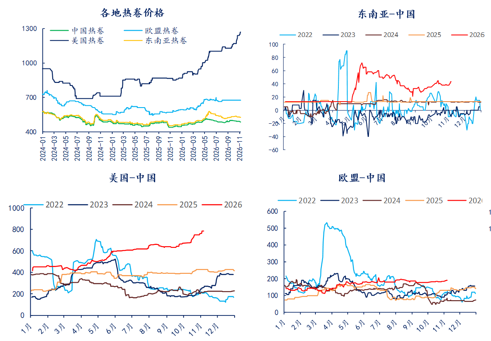
| 分类 | 指标 | 2026/10/30 | 2026/11/06 | 2026/11/13 | 2026/11/20 | 周环比 | 月同比 | 年同比 | 累计同比（45个可比周） |
|---|---|---|---|---|---|---|---|---|---|
| 日均量/周度 | 247家钢企铁水日产 | 231.87 | 230.69 | 230.32 | 229.57 | -0.33% | -1.18% | -2.84% | -1.08% |
| 日均量/周度 | 富宝255家废钢日耗 | 48.10 | 48.90 | 48.31 | 48.58 | +0.56% | -1.20% | -4.32% | -4.36% |
| 日均量/周度 | 粗钢日度供给（铁水+废钢） | 279.97 | 279.59 | 278.63 | 278.15 | -0.17% | -1.18% | -3.10% | -1.66% |
单位：万吨/日；周度日均量。最新一期铁水观察日 2026-11-20，同周富宝废钢观察日 2026-11-19。 累计同比比较年初至今的45个可比周，2026年1月30日／2025年1月31日及2026年2月20日／2025年2月21日两组春节停报配对周均剔除。
| 分类 | 指标 | 2026/10/14 | 2026/10/21 | 2026/10/28 | 2026/11/04 | 周环比 | 月同比 | 年同比 | 累计同比（44个可比周） |
|---|---|---|---|---|---|---|---|---|---|
| 螺纹 | 周产量 | 323.08 | 326.13 | 339.94 | 335.95 | -1.17% | +8.54% | -8.13% | -11.64% |
| 钢厂库存 | 297.66 | 289.78 | 287.84 | 288.59 | +0.26% | -10.00% | -3.89% | #N/A | |
| 社会库存 | 618.84 | 590.57 | 567.20 | 551.10 | -2.84% | -17.53% | -13.09% | #N/A | |
| 总库存 | 916.50 | 880.35 | 855.04 | 839.69 | -1.80% | -15.09% | -10.14% | #N/A | |
| 表需 | 395.47 | 362.28 | 365.25 | 351.30 | -3.82% | +37.36% | -9.07% | #N/A | |
| 热卷 | 周产量 | 647.88 | 651.33 | 652.73 | 649.03 | -0.57% | -0.97% | -0.67% | +3.39% |
| 钢厂库存 | 162.82 | 162.91 | 163.72 | 164.10 | +0.23% | -4.31% | +4.56% | #N/A | |
| 社会库存 | 783.74 | 779.64 | 766.09 | 745.01 | -2.75% | -6.57% | +11.50% | #N/A | |
| 总库存 | 946.56 | 942.55 | 929.81 | 909.11 | -2.23% | -6.17% | +10.18% | #N/A | |
| 表需 | 670.22 | 655.34 | 665.47 | 669.73 | +0.64% | +9.76% | +2.55% | #N/A |
来源：hand全样本历史、MS周度社会库存；单位：万吨。周环比比较上一实际业务期，月同比比较4周前，年同比比较52周前，均为百分比； 累计同比仅用于周产量，按年初至报告日的 44 个实际观察周与上年逐周配对（观察日减364天）；春节周有原报值，纳入累计。
| 分类 | 指标 | 2026/10/30 | 2026/11/06 | 2026/11/11 | 2026/11/19 | 周环比 | 月同比 | 年同比 | 累计同比（47个可比周） |
|---|---|---|---|---|---|---|---|---|---|
| 螺纹 | 实际产量 | 181.18 | 185.90 | 182.82 | 182.64 | -0.10% | +4.53% | -12.18% | -9.28% |
| 厂内库存 | 147.24 | 147.39 | 145.69 | 150.15 | +3.06% | -1.44% | -2.07% | #N/A | |
| 社会库存 | 350.03 | 334.98 | 320.35 | 310.22 | -3.16% | -16.12% | -22.45% | #N/A | |
| 总库存 | 497.27 | 482.37 | 466.04 | 460.37 | -1.22% | -11.83% | -16.80% | #N/A | |
| 表观需求 | 206.07 | 200.80 | 199.15 | 188.31 | -5.44% | -6.33% | -18.41% | #N/A | |
| 线材 | 实际产量 | 77.82 | 79.11 | 77.47 | 81.61 | +5.34% | +5.06% | +3.40% | -3.28% |
| 厂内库存 | 51.87 | 51.35 | 50.32 | 52.00 | +3.34% | -8.87% | +2.87% | #N/A | |
| 社会库存 | 54.49 | 51.17 | 48.70 | 49.74 | +2.14% | -12.29% | -19.97% | #N/A | |
| 总库存 | 106.36 | 102.52 | 99.02 | 101.74 | +2.75% | -10.57% | -9.72% | #N/A | |
| 表观需求 | 85.23 | 82.95 | 80.97 | 78.89 | -2.57% | -3.39% | -10.87% | #N/A | |
| 热卷 | 实际产量 | 288.09 | 291.28 | 292.51 | 293.74 | +0.42% | +2.65% | -7.05% | -6.88% |
| 厂内库存 | 67.72 | 71.00 | 74.10 | 72.05 | -2.77% | +7.36% | -7.65% | #N/A | |
| 社会库存 | 360.48 | 351.31 | 345.34 | 339.21 | -1.78% | -7.96% | +4.67% | #N/A | |
| 总库存 | 428.20 | 422.31 | 419.44 | 411.26 | -1.95% | -5.60% | +2.28% | #N/A | |
| 表观需求 | 295.56 | 297.17 | 295.38 | 301.92 | +2.21% | +4.40% | -6.94% | #N/A | |
| 冷轧 | 实际产量 | 85.05 | 83.72 | 83.87 | 83.37 | -0.60% | -2.04% | -1.37% | +0.94% |
| 厂内库存 | 40.36 | 40.24 | 39.98 | 38.97 | -2.53% | -7.10% | +0.05% | #N/A | |
| 社会库存 | 131.33 | 130.60 | 130.43 | 128.60 | -1.40% | -2.96% | -2.60% | #N/A | |
| 总库存 | 171.69 | 170.84 | 170.41 | 167.57 | -1.67% | -3.95% | -1.99% | #N/A | |
| 表观需求 | 87.83 | 84.57 | 84.30 | 86.21 | +2.27% | -0.34% | +0.69% | #N/A | |
| 中厚板 | 实际产量 | 165.66 | 164.88 | 165.98 | 166.10 | +0.07% | -1.35% | +2.23% | +5.41% |
| 厂内库存 | 67.00 | 66.80 | 66.10 | 66.00 | -0.15% | -2.37% | -20.34% | #N/A | |
| 社会库存 | 134.26 | 134.98 | 135.28 | 134.36 | -0.68% | +0.21% | +20.91% | #N/A | |
| 总库存 | 201.26 | 201.78 | 201.38 | 200.36 | -0.51% | -0.65% | +3.29% | #N/A | |
| 表观需求 | 166.08 | 164.36 | 166.38 | 167.12 | +0.44% | +0.83% | +1.40% | #N/A | |
| 五大材合计 | 实际产量 | 797.80 | 804.89 | 802.65 | 807.46 | +0.60% | +1.95% | -4.99% | -4.08% |
| 厂内库存 | 374.19 | 376.78 | 376.19 | 379.17 | +0.79% | -1.78% | -6.07% | #N/A | |
| 社会库存 | 1030.59 | 1003.04 | 980.10 | 962.13 | -1.83% | -9.38% | -6.54% | #N/A | |
| 总库存 | 1404.78 | 1379.82 | 1356.29 | 1341.30 | -1.11% | -7.35% | -6.41% | #N/A | |
| 表观需求 | 840.77 | 829.85 | 826.18 | 822.45 | -0.45% | -0.20% | -8.02% | #N/A |
来源：hand 非五大材工作簿、SQL 已核验五大材小样本。分项按原公式延伸至 2026-11-20。合计按同统计周对齐，五大材该周观察日为 11-19。总库存＝厂库＋社库，表需＝产量−库存周变化。优特钢按所属月实际产量÷4折周，11月实际未公布，11月周值按月计划÷4列示。累计同比按52周前配对，缺期显示 #N/A。
周度钢材产量＝五大材小样本周产量＋非五大材窄口径周度量。非五大材窄口径＝带钢＋型钢（H型钢、工角槽）＋涂镀（镀锌、彩涂）＋唐山钢坯日均外卖量×7。合计为样本口径，单位万吨/周。
| 指标 | 单位 | 2026-10-30 | 2026-11-06 | 2026-11-13 | 2026-11-20 | 周环比(%) | 月同比(%) | 年同比(%) | 累计同比(%) |
|---|---|---|---|---|---|---|---|---|---|
| 周度钢材产量 | 万吨 | 1,213.49 | 1,210.27 | 1,205.38 | 1,216.46 | +0.92 | +1.42 | -4.13 | #N/A |
| 钢材总库存 | 万吨 | 2,257.60 | 2,222.72 | 2,198.06 | 2,185.21 | -0.58 | -5.33 | +2.21 | #N/A |
| 钢材表观需求 | 万吨 | 1,264.18 | 1,245.15 | 1,230.04 | 1,229.31 | -0.06 | -0.94 | -6.86 | #N/A |
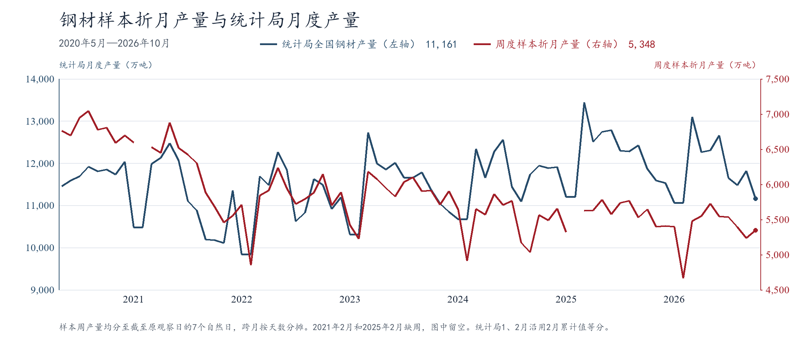
| 指标 | 单位 | 2026-10-30 | 2026-11-06 | 2026-11-13 | 2026-11-20 | 周环比(%) | 月同比(%) | 年同比(%) | 累计同比(%) |
|---|---|---|---|---|---|---|---|---|---|
| 非五大材合计产量 | 万吨 | 415.69 | 405.38 | 402.73 | 409.00 | +1.56 | +0.41 | -2.38 | #N/A |
| 非五大材合计总库存 | 万吨 | 852.82 | 842.90 | 841.77 | 843.91 | +0.25 | -1.93 | +19.71 | #N/A |
| 非五大材合计表需 | 万吨 | 423.41 | 415.30 | 403.86 | 406.86 | +0.74 | -2.40 | -4.43 | #N/A |
| 指标 | 单位 | 2026-10-30 | 2026-11-06 | 2026-11-13 | 2026-11-20 | 周环比(%) | 月同比(%) | 年同比(%) | 累计同比(%) |
|---|---|---|---|---|---|---|---|---|---|
| 涂镀产量 | 万吨 | 135.36 | 135.62 | 133.94 | 131.62 | -1.73 | -1.78 | +8.75 | +13.72 |
| 涂镀总库 | 万吨 | 246.77 | 246.55 | 244.81 | 243.70 | -0.45 | -1.85 | +5.36 | #N/A |
| 涂镀表需 | 万吨 | 136.89 | 135.84 | 135.68 | 132.73 | -2.17 | -1.38 | +8.96 | #N/A |
| 指标 | 单位 | 2026-10-30 | 2026-11-06 | 2026-11-13 | 2026-11-20 | 周环比(%) | 月同比(%) | 年同比(%) | 累计同比(%) |
|---|---|---|---|---|---|---|---|---|---|
| 型钢产量 | 万吨 | 56.59 | 56.66 | 54.10 | 52.45 | -3.05 | -8.72 | -23.17 | -2.47 |
| 型钢总库 | 万吨 | 278.72 | 271.62 | 271.54 | 272.73 | +0.44 | -1.70 | +19.34 | #N/A |
| 型钢表需 | 万吨 | 55.32 | 63.76 | 54.18 | 51.26 | -5.39 | -20.44 | -21.19 | #N/A |
| 指标 | 单位 | 2026-10-30 | 2026-11-06 | 2026-11-13 | 2026-11-20 | 周环比(%) | 月同比(%) | 年同比(%) | 累计同比(%) |
|---|---|---|---|---|---|---|---|---|---|
| 带钢产量 | 万吨 | 189.79 | 183.35 | 184.59 | 194.83 | +5.55 | -1.08 | -5.11 | #N/A |
| 带钢总库存 | 万吨 | 149.59 | 142.92 | 140.61 | 138.57 | -1.45 | -13.59 | +23.99 | #N/A |
| 带钢表需 | 万吨 | 200.57 | 190.02 | 186.90 | 196.87 | +5.33 | -3.11 | -7.02 | #N/A |
| 指标 | 单位 | 2026-10-30 | 2026-11-06 | 2026-11-13 | 2026-11-20 | 周环比(%) | 月同比(%) | 年同比(%) | 累计同比(%) |
|---|---|---|---|---|---|---|---|---|---|
| 钢坯产量 | 万吨 | 33.95 | 29.75 | 30.10 | 30.10 | +0.00 | +59.26 | +23.56 | +4.16 |
| 钢坯总库 | 万吨 | 177.74 | 181.81 | 184.81 | 188.91 | +2.22 | +8.31 | +41.68 | #N/A |
| 钢坯表需 | 万吨 | 30.63 | 25.68 | 27.10 | 26.00 | -4.06 | +77.23 | -4.17 | #N/A |
| 指标 | 单位 | 2026-10-30 | 2026-11-06 | 2026-11-13 | 2026-11-20 | 周环比(%) | 月同比(%) | 年同比(%) | 累计同比(%) |
|---|---|---|---|---|---|---|---|---|---|
| 焊管产量 | 万吨 | 27.00 | 26.58 | 27.22 | 26.56 | -2.42 | -2.64 | -11.08 | #N/A |
| 焊管总库 | 万吨 | 110.18 | 110.11 | 110.11 | 108.69 | -1.29 | -0.73 | +7.85 | #N/A |
| 焊管表需 | 万吨 | 26.31 | 26.65 | 27.22 | 27.98 | +2.79 | -2.10 | -10.21 | #N/A |
| 指标 | 单位 | 2026-10-30 | 2026-11-06 | 2026-11-13 | 2026-11-20 | 周环比(%) | 月同比(%) | 年同比(%) | 累计同比(%) |
|---|---|---|---|---|---|---|---|---|---|
| 无缝管产量 | 万吨 | 42.29 | 40.20 | 38.65 | 36.19 | -6.36 | -11.58 | -6.94 | #N/A |
| 无缝管总库 | 万吨 | 163.34 | 162.55 | 161.27 | 159.48 | -1.11 | -2.90 | +9.06 | #N/A |
| 无缝管表需 | 万吨 | 43.19 | 40.99 | 39.93 | 37.98 | -4.88 | -7.64 | -2.89 | #N/A |
| 指标 | 单位 | 2026-10-30 | 2026-11-06 | 2026-11-13 | 2026-11-20 | 周环比(%) | 月同比(%) | 年同比(%) | 累计同比(%) |
|---|---|---|---|---|---|---|---|---|---|
| 优特钢产量 | 万吨 | 87.87 | 85.41 | 85.41 | 85.41 | +0.00 | -2.80 | +5.03 | +3.86 |
| 优特钢总库存 | 万吨 | 351.36 | 343.56 | 340.07 | 338.81 | -0.37 | -2.47 | +22.61 | #N/A |
| 尤特表需 | 万吨 | 83.89 | 93.21 | 88.90 | 86.67 | -2.51 | +0.83 | +1.06 | #N/A |
| 指标 | 单位 | 2026-10-30 | 2026-11-06 | 2026-11-13 | 2026-11-20 | 周环比(%) | 月同比(%) | 年同比(%) | 累计同比(%) |
|---|---|---|---|---|---|---|---|---|---|
| 工业线产量 | 万吨 | 134.91 | 132.13 | 131.49 | 136.03 | +3.46 | -0.98 | +4.27 | #N/A |
| 工业线总库存 | 万吨 | 190.67 | 187.73 | 184.26 | 179.63 | -2.51 | -6.42 | +24.04 | #N/A |
| 工业线表需 | 万吨 | 136.20 | 135.07 | 134.96 | 140.66 | +4.23 | -2.12 | -3.18 | #N/A |
| 指标 | 单位 | 2026-10-30 | 2026-11-06 | 2026-11-13 | 2026-11-20 | 周环比(%) | 月同比(%) | 年同比(%) |
|---|---|---|---|---|---|---|---|---|
| 五大材小样本库存 | 万吨 | 1,404.78 | 1,379.82 | 1,356.29 | 1,341.30 | -1.11 | -7.35 | -6.41 |
| 非五大材库存（宽口径） | 万吨 | 1,668.37 | 1,646.85 | 1,637.48 | 1,630.52 | -0.43 | -2.57 | +18.75 |
| 非五大材库存（剔除工业线厂库，含管材厂库） | 万吨 | 1,573.66 | 1,554.20 | 1,547.53 | 1,543.85 | -0.24 | -1.86 | +18.98 |
| 建筑相关 | 万吨 | 1,333.61 | 1,310.98 | 1,292.79 | 1,291.92 | -0.07 | -5.11 | +1.33 |
| 制造业相关 | 万吨 | 1,739.54 | 1,715.69 | 1,700.98 | 1,679.90 | -1.24 | -4.54 | +9.71 |
| 指标 | 单位 | 2026-10-30 | 2026-11-06 | 2026-11-13 | 2026-11-20 | 周环比(%) | 月同比(%) | 年同比(%) |
|---|---|---|---|---|---|---|---|---|
| 五大材环比 | 万吨 | -42.97 | -24.96 | -23.53 | -14.99 | -36.29 | -53.27 | -66.12 |
| 非五大 | 万吨 | -5.24 | -21.52 | -9.37 | -6.96 | -25.72 | -55.01 | -74.72 |
| 非五大（剔除工业线厂库，含管材厂库） | 万吨 | 0.63 | -19.46 | -6.67 | -3.68 | -44.83 | -64.27 | -80.03 |
| 建筑相关 | 万吨 | -27.92 | -22.63 | -18.19 | -0.87 | -95.22 | -97.48 | -97.40 |
| 制造业相关 | 万吨 | -20.29 | -23.85 | -14.71 | -21.08 | +43.30 | +61.66 | -44.99 |
| 螺纹 | 万吨 | -24.89 | -14.90 | -16.33 | -5.67 | -65.28 | -78.44 | -75.16 |
| 热卷 | 万吨 | -7.47 | -5.89 | -2.87 | -8.18 | +185.02 | +168.20 | -2.73 |
| 线材 | 万吨 | -7.41 | -3.84 | -3.50 | 2.72 | -177.71 | -168.34 | -128.39 |
| 冷轧 | 万吨 | -2.78 | -0.85 | -0.43 | -2.84 | +560.47 | +104.32 | +160.55 |
| 中厚板 | 万吨 | -0.42 | 0.52 | -0.40 | -1.02 | +155.00 | -138.64 | -56.41 |
| 带钢 | 万吨 | -10.78 | -6.67 | -2.31 | -2.04 | -11.69 | -67.26 | -68.22 |
| 钢坯 | 万吨 | 3.32 | 4.07 | 3.00 | 4.10 | +36.67 | -3.07 | -248.01 |
| 型钢 | 万吨 | 1.27 | -7.10 | -0.08 | 1.19 | -1587.50 | -117.07 | -63.16 |
| 涂镀 | 万吨 | -1.53 | -0.22 | -1.74 | -1.11 | -36.21 | +88.14 | +40.51 |
| 焊管 | 万吨 | -0.06 | -0.09 | -0.51 | -0.81 | +58.82 | +37.29 | +145.45 |
| 无缝管 | 万吨 | -0.36 | -0.53 | -0.20 | -0.50 | +150.00 | -15.25 | -5100.00 |
| 优特钢 | 万吨 | 3.98 | -7.80 | -3.49 | -1.26 | -63.90 | -165.97 | -71.62 |
| 工业线 | 万吨 | -1.29 | -2.94 | -3.47 | -4.63 | +33.43 | -26.86 | -68.78 |
注意：原表BX虽然标注“不含管材、工业线厂库”，公式仍含焊管和无缝管厂库，实际仅剔除工业线厂库。工业线社库采用原公式31项合计；缺任何输入均保持缺失。春节图按源表实际春节日期归年，避免TODAY()导致年份标签错位。
单位：万吨；截至2026-10-31。这是统计局钢材产量，不是粗钢产量。全国＋29个省级地区；源表未含海南、西藏。沿用已确认的1月＝2月＝2月累计÷2，3—12月原始当月值；全年值、当年累计值及累计同比均读取原始累计序列。 月同比＝上年同月；年度同比＝2025全年较2024全年；累计同比＝本年年初至当月较上年同期。缺失保留#N/A。
| 分类 | 地区/国家 | 2026-07 | 2026-08 | 2026-09 | 2026-10 | 月环比 | 月同比 | 年度同比（2025全年） | 2025年全年 | 2026年1–10月累计 | 累计同比 |
|---|---|---|---|---|---|---|---|---|---|---|---|
| 全国 | 全国 | 11,645.60 | 11,475.00 | 11,816.70 | 11,161.30 | -5.55% | -5.92% | +3.32% | 144,612.10 | 117,347.60 | -3.62% |
| 分省份 | 河北 | 3,109.68 | 3,073.67 | 3,220.25 | 2,900.26 | -9.94% | +5.36% | +8.67% | 34,869.04 | 30,806.02 | +4.12% |
| 分省份 | 江苏 | 1,252.39 | 1,187.97 | 1,261.83 | 1,201.23 | -4.80% | -4.75% | -2.16% | 16,395.76 | 12,842.49 | -7.71% |
| 分省份 | 山东 | 1,076.88 | 1,070.87 | 1,094.05 | 1,101.86 | +0.71% | +3.85% | +14.60% | 13,082.41 | 11,062.65 | +0.23% |
| 分省份 | 辽宁 | 576.41 | 536.03 | 584.43 | 565.12 | -3.30% | -4.03% | -0.68% | 7,538.14 | 5,751.22 | -8.76% |
| 分省份 | 山西 | 493.03 | 504.96 | 559.73 | 552.30 | -1.33% | +3.10% | -1.72% | 6,774.18 | 5,716.59 | -1.55% |
| 分省份 | 广东 | 513.83 | 521.32 | 530.48 | 522.49 | -1.51% | -2.76% | +0.35% | 6,316.75 | 5,137.83 | -1.14% |
| 分省份 | 福建 | 432.58 | 428.86 | 423.66 | 427.82 | +0.98% | -3.29% | +1.84% | 5,184.24 | 4,118.91 | -4.44% |
| 分省份 | 天津 | 381.87 | 392.61 | 409.93 | 357.48 | -12.79% | -26.16% | -9.20% | 5,445.61 | 3,981.86 | -11.84% |
| 分省份 | 广西 | 459.68 | 387.24 | 381.04 | 271.28 | -28.81% | -53.57% | +16.59% | 6,518.33 | 4,284.44 | -19.41% |
| 分省份 | 安徽 | 308.62 | 305.85 | 309.92 | 325.08 | +4.89% | -4.22% | +0.45% | 4,058.44 | 3,296.65 | -4.94% |
| 分省份 | 湖北 | 293.38 | 298.33 | 304.62 | 286.69 | -5.89% | -8.39% | -1.25% | 3,600.95 | 2,984.92 | -3.72% |
| 分省份 | 江西 | 292.71 | 302.76 | 292.97 | 270.89 | -7.54% | -17.54% | -2.86% | 3,612.02 | 2,859.52 | -4.06% |
| 分省份 | 河南 | 284.44 | 288.90 | 283.07 | 262.09 | -7.41% | +5.96% | -1.69% | 3,053.18 | 2,770.75 | +6.53% |
| 分省份 | 浙江 | 276.20 | 264.86 | 280.45 | 287.55 | +2.53% | +4.98% | +2.22% | 3,220.66 | 2,746.73 | +2.86% |
| 分省份 | 湖南 | 261.32 | 266.05 | 272.18 | 282.68 | +3.86% | +3.77% | -2.46% | 2,991.49 | 2,611.95 | +5.94% |
| 分省份 | 四川 | 262.63 | 236.48 | 265.90 | 262.35 | -1.34% | -21.94% | +2.39% | 4,000.21 | 2,800.99 | -15.68% |
| 分省份 | 内蒙古 | 229.45 | 282.88 | 237.72 | 247.95 | +4.30% | -17.31% | +5.70% | 3,638.49 | 2,650.84 | -12.67% |
| 分省份 | 上海 | 172.86 | 175.86 | 182.20 | 177.78 | -2.43% | -2.49% | +3.77% | 2,117.66 | 1,765.42 | +1.86% |
| 分省份 | 新疆 | 163.78 | 159.45 | 168.30 | 144.26 | -14.28% | -9.09% | +11.86% | 1,598.17 | 1,401.09 | +0.75% |
| 分省份 | 云南 | 170.45 | 165.78 | 151.89 | 170.14 | +12.02% | -8.58% | +1.19% | 2,303.22 | 1,801.26 | -4.35% |
| 分省份 | 重庆 | 136.40 | 132.59 | 137.67 | 142.79 | +3.72% | -8.43% | +2.02% | 1,891.97 | 1,282.84 | -19.66% |
| 分省份 | 吉林 | 94.58 | 107.05 | 106.00 | 67.48 | -36.34% | -52.11% | +3.10% | 1,538.68 | 959.99 | -27.83% |
| 分省份 | 陕西 | 110.15 | 102.13 | 93.41 | 79.78 | -14.59% | -32.45% | -12.57% | 1,323.97 | 963.41 | -14.31% |
| 分省份 | 甘肃 | 86.74 | 91.84 | 71.76 | 78.90 | +9.95% | -19.70% | -1.74% | 1,215.26 | 908.16 | -14.06% |
| 分省份 | 黑龙江 | 72.32 | 69.41 | 68.24 | 56.57 | -17.10% | +12.53% | -2.73% | 853.78 | 629.92 | -15.91% |
| 分省份 | 贵州 | 50.12 | 47.60 | 50.24 | 51.51 | +2.53% | +16.56% | -3.03% | 569.42 | 478.07 | +1.45% |
| 分省份 | 宁夏 | 55.53 | 49.50 | 48.09 | 40.67 | -15.43% | -7.97% | +2.70% | 556.38 | 444.49 | -12.09% |
| 分省份 | 北京 | 15.63 | 11.82 | 13.66 | 13.73 | +0.51% | -12.60% | +3.02% | 192.38 | 158.83 | -0.88% |
| 分省份 | 青海 | 11.93 | 12.31 | 13.04 | 12.55 | -3.76% | +11.56% | +10.92% | 151.31 | 129.75 | +4.55% |
单位：万吨；截至2026-09-30。WSA原始单位千吨，展示统一换算万吨（÷10）；全球、洲别/区域及按2025全年产量入选的前十国家，国家按最新月产量降序。 月同比＝上年同月；年度同比＝2025全年较2024全年；累计同比＝本年年初至当月较上年同期。缺失保留#N/A。
| 分类 | 地区/国家 | 2026-06 | 2026-07 | 2026-08 | 2026-09 | 月环比 | 月同比 | 年度同比（2025全年） | 累计同比 |
|---|---|---|---|---|---|---|---|---|---|
| 全球/洲别区域 | 全球 | 10,536.60 | 10,253.40 | 10,137.50 | 9,762.50 | -3.70% | -0.48% | -2.04% | -1.79% |
| 全球/洲别区域 | 亚洲 | 8,953.40 | 8,680.90 | 8,582.60 | 8,249.60 | -3.88% | +0.22% | -1.97% | -1.56% |
| 全球/洲别区域 | 欧盟27国 | 504.30 | 507.10 | 488.50 | 481.50 | -1.43% | -3.85% | -5.61% | -2.76% |
| 全球/洲别区域 | 欧洲其他国家 | 103.30 | 108.00 | 113.70 | 110.20 | -3.08% | +0.36% | -12.67% | +8.73% |
| 全球/洲别区域 | 欧盟其他国家 | 90.90 | 90.20 | 85.90 | 86.00 | +0.12% | +7.10% | +0.91% | -2.01% |
| 全球/洲别区域 | 北美地区 | 227.00 | 233.00 | 236.00 | 227.50 | -3.60% | -0.09% | +2.91% | -1.40% |
| 全球/洲别区域 | 南美洲 | 236.80 | 238.00 | 227.80 | 239.00 | +4.92% | +1.88% | -1.91% | -0.06% |
| 全球/洲别区域 | 非洲南部 | 15.30 | 15.00 | 15.70 | 15.00 | -4.46% | -6.25% | -11.20% | -32.74% |
| 全球/洲别区域 | 大洋洲 | 27.30 | 27.90 | 27.10 | 21.50 | -20.66% | -29.04% | +18.49% | -15.23% |
| 前十国家 | 中国 | 7,199.00 | 6,835.00 | 6,765.00 | 6,534.00 | -3.41% | -1.40% | -2.21% | -2.75% |
| 前十国家 | 印度 | 787.60 | 845.20 | 841.20 | 805.90 | -4.20% | +1.67% | +6.19% | +3.13% |
| 前十国家 | 日本 | 490.50 | 512.40 | 507.40 | 448.30 | -11.65% | -2.80% | -4.22% | -0.25% |
| 前十国家 | 俄罗斯 | 402.10 | 400.30 | 420.40 | 407.00 | -3.19% | +4.15% | -1.49% | -3.30% |
| 前十国家 | 韩国 | 364.40 | 381.70 | 369.70 | 365.30 | -1.19% | +4.19% | +1.14% | +1.64% |
| 前十国家 | 巴西 | 222.00 | 220.50 | 209.70 | 222.30 | +6.01% | +2.35% | -0.77% | -0.49% |
| 前十国家 | 德国 | 173.30 | 166.20 | 164.90 | 155.90 | -5.46% | -19.93% | -10.08% | +2.61% |
| 前十国家 | 土耳其 | 88.60 | 94.90 | 93.90 | 91.80 | -2.24% | +7.12% | -4.62% | +16.85% |
| 前十国家 | 奥地利 | 52.60 | 53.20 | 52.20 | 52.20 | +0.00% | +6.53% | +6.92% | +4.71% |
| 前十国家 | 乌克兰 | 67.10 | 43.20 | 25.70 | 11.30 | -56.03% | -83.46% | +11.20% | -22.95% |
单位：万吨；截至2026-09-30。WSA原始单位千吨，展示统一换算万吨（÷10）；全球、洲别/区域及按2025全年产量入选的前十国家，国家按最新月产量降序。 月同比＝上年同月；年度同比＝2025全年较2024全年；累计同比＝本年年初至当月较上年同期。缺失保留#N/A。
| 分类 | 地区/国家 | 2026-06 | 2026-07 | 2026-08 | 2026-09 | 月环比 | 月同比 | 年度同比（2025全年） | 累计同比 |
|---|---|---|---|---|---|---|---|---|---|
| 全球/洲别区域 | 全球 | 15,571.70 | 14,884.80 | 14,485.30 | 14,240.00 | -1.69% | -0.23% | -1.98% | -0.71% |
| 全球/洲别区域 | 亚洲 | 11,463.20 | 10,882.80 | 10,630.30 | 10,364.40 | -2.50% | +0.82% | -2.52% | -0.84% |
| 全球/洲别区域 | 欧盟27国 | 1,081.10 | 1,011.30 | 890.60 | 1,005.80 | +12.94% | -5.03% | -2.71% | -0.85% |
| 全球/洲别区域 | 欧洲其他国家 | 365.80 | 367.10 | 375.60 | 357.70 | -4.77% | -1.38% | -0.74% | +4.12% |
| 全球/洲别区域 | 欧盟其他国家 | 49.00 | 41.50 | 44.10 | 42.50 | -3.63% | -23.97% | -8.71% | -14.87% |
| 全球/洲别区域 | 独联体 | 705.80 | 683.80 | 647.90 | 609.10 | -5.99% | -1.93% | -4.42% | -5.02% |
| 全球/洲别区域 | 北美地区 | 938.60 | 957.40 | 969.00 | 926.70 | -4.37% | +3.43% | +1.27% | +4.68% |
| 全球/洲别区域 | 南美洲 | 357.60 | 355.60 | 345.80 | 353.50 | +2.23% | +0.26% | -0.57% | -0.17% |
| 全球/洲别区域 | 非洲 | 216.30 | 202.00 | 212.70 | 223.30 | +4.98% | +10.54% | +4.37% | +9.73% |
| 全球/洲别区域 | 非洲南部 | 37.30 | 36.50 | 37.00 | 36.80 | -0.54% | +12.88% | -4.68% | -9.83% |
| 全球/洲别区域 | 大洋洲 | 44.20 | 46.00 | 45.90 | 37.70 | -17.86% | -16.04% | +10.78% | -9.28% |
| 全球/洲别区域 | 中东地区 | 399.10 | 378.70 | 367.50 | 362.00 | -1.50% | -20.44% | +4.60% | -9.18% |
| 前十国家 | 中国 | 8,367.00 | 7,693.00 | 7,461.00 | 7,359.00 | -1.37% | +0.10% | -4.58% | -2.94% |
| 前十国家 | 印度 | 1,392.20 | 1,437.20 | 1,493.50 | 1,390.90 | -6.87% | +1.88% | +10.83% | +5.64% |
| 前十国家 | 美国 | 721.60 | 739.00 | 754.90 | 720.00 | -4.62% | +4.30% | +3.12% | +5.80% |
| 前十国家 | 日本 | 679.20 | 693.30 | 665.20 | 634.10 | -4.68% | -0.56% | -3.97% | -0.25% |
| 前十国家 | 俄罗斯 | 586.80 | 584.70 | 567.10 | 550.00 | -3.02% | +6.18% | -4.45% | -3.64% |
| 前十国家 | 韩国 | 528.90 | 571.50 | 535.30 | 523.00 | -2.30% | +3.56% | -2.22% | +2.88% |
| 前十国家 | 土耳其 | 329.90 | 340.40 | 338.00 | 321.60 | -4.85% | +0.78% | +3.32% | +6.09% |
| 前十国家 | 巴西 | 284.00 | 280.40 | 269.30 | 279.10 | +3.64% | -0.82% | -1.38% | -1.74% |
| 前十国家 | 德国 | 293.40 | 267.90 | 259.40 | 262.70 | +1.27% | -13.01% | -8.15% | +3.98% |
| 前十国家 | 伊朗 | 210.00 | 200.00 | 200.00 | 200.00 | +0.00% | -14.71% | +2.04% | -9.82% |
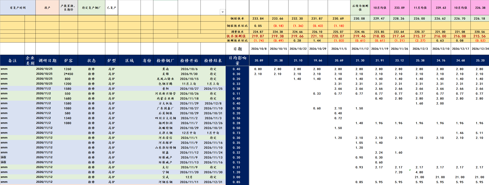
| 指标 | 单位 | 2026-08-31 | 2026-09-30 | 2026-10-31 | 2026-11-30 | 月环比(%) | 月同比(%) | 年度同比(%) |
|---|---|---|---|---|---|---|---|---|
| 螺纹上月产量 | 万吨 | 731.90 | 691.09 | 695.97 | 683.26 | -1.83 | -16.84 | #N/A |
| 螺纹本月计划产量 | 万吨 | 722.29 | 714.97 | 683.66 | 687.61 | +0.58 | -7.92 | #N/A |
| 热卷本月计划产量 | 万吨 | 1,308.60 | 1,353.45 | 1,352.96 | 1,317.85 | -2.60 | -6.20 | #N/A |
| 热卷本月计划出口量 | 万吨 | 102.30 | 107.20 | 99.90 | 107.90 | +8.01 | -4.51 | #N/A |
| 热卷上月产量 | 万吨 | 1,341.57 | 1,301.60 | 1,356.60 | 1,348.45 | -0.60 | -6.17 | #N/A |
| 热卷上月出口量 | 万吨 | 105.30 | 101.49 | 106.50 | 99.30 | -6.76 | +0.10 | #N/A |
| 冷轧上月产量 | 万吨 | 402.65 | 391.62 | 400.38 | 399.08 | -0.32 | -10.01 | #N/A |
| 冷轧本月计划产量 | 万吨 | 392.62 | 400.78 | 403.08 | 396.51 | -1.63 | -1.36 | #N/A |
| 品种 | 观察日期 | 实际产量万吨 | 厂内库存万吨 | 社会库存万吨 | 总库存万吨 | 表观需求万吨 |
|---|---|---|---|---|---|---|
| 螺纹 | 2026-11-19 | 182.64 | 150.15 | 310.22 | 460.37 | 188.31 |
| 指标 | 单位 | 2026-11-12 | 2026-11-13 | 2026-11-16 | 2026-11-17 | 日环比 | 周同比 | 月同比 | 年同比 |
|---|---|---|---|---|---|---|---|---|---|
| 杭州螺纹｜库存 | 万吨 | 57.00 | 55.30 | 60.20 | 59.50 | -1.16% | -2.30% | #N/A | -38.79% |
| 杭州螺纹｜出库 | 万吨 | 3.20 | 3.00 | 6.30 | 3.40 | -46.03% | +9.68% | #N/A | -58.02% |
| 地区 | 城市／指标 | 2026-10-30 | 2026-11-06 | 2026-11-13 | 2026-11-20 | 周环比(%) | 月同比(%) | 年同比(%) |
|---|---|---|---|---|---|---|---|---|
| 华北地区 | 北京社会库存 | 45.33 | 43.39 | 43.63 | 41.82 | -4.15% | -11.83% | +49.04% |
| 华北地区 | 天津社会库存 | 5.13 | 5.20 | 5.36 | 5.46 | +1.87% | +24.09% | +51.25% |
| 东北地区 | 沈阳社会库存 | 17.37 | 17.58 | 16.01 | 14.88 | -7.06% | -22.54% | -23.02% |
| 华东地区 | 杭州社会库存 | 71.61 | 71.27 | 68.19 | 68.09 | -0.15% | -10.03% | -25.67% |
| 华东地区 | 上海社会库存 | 20.03 | 19.03 | 17.70 | 18.40 | +3.95% | -8.32% | -47.43% |
| 华南地区 | 广州社会库存 | 10.36 | 10.21 | 9.95 | 10.74 | +7.94% | +11.18% | -20.91% |
| 西北地区 | 西安社会库存 | 12.20 | 11.70 | 10.20 | 9.90 | -2.94% | -26.67% | -52.63% |
| 西南地区 | 成都社会库存 | 26.93 | 24.35 | 22.69 | 21.57 | -4.94% | -30.08% | -1.91% |
| 华中地区 | 武汉社会库存 | 12.72 | 12.59 | 12.22 | 11.05 | -9.57% | -4.99% | -37.14% |
| 品种 | 观察日期 | 实际产量万吨 | 厂内库存万吨 | 社会库存万吨 | 总库存万吨 | 表观需求万吨 |
|---|---|---|---|---|---|---|
| 热卷 | 2026-11-19 | 293.74 | 72.05 | 339.21 | 411.26 | 301.92 |
| 指标 | 单位 | 2026-10-01 | 2026-10-08 | 2026-10-15 | 2026-10-22 | 周环比(%) | 月同比(%) | 年同比(%) |
|---|---|---|---|---|---|---|---|---|
| 热卷各地区库存-上海 | 万吨 | 51.49 | 55.78 | 54.06 | 54.19 | +0.24 | +6.59 | +34.63 |
| 热卷各地区库存-乐从 | 万吨 | 94.65 | 100.01 | 98.03 | 97.39 | -0.65 | +3.72 | -2.98 |
| 热卷各地区库存-张家港 | 万吨 | 30.90 | 32.40 | 31.80 | 31.80 | +0.00 | +13.17 | +16.48 |
| 热卷各地区库存-宁波 | 万吨 | 18.72 | 19.48 | 19.35 | 17.60 | -9.04 | -9.28 | -6.88 |
| 热卷各地区库存-唐山 | 万吨 | 90.18 | 98.97 | 97.56 | 98.34 | +0.80 | +8.51 | +24.25 |
| 热卷各地区库存-邯郸 | 万吨 | 53.20 | 56.35 | 56.00 | 53.39 | -4.66 | +40.80 | +27.57 |
| 热卷各地区库存-博兴 | 万吨 | 3.27 | 3.27 | 3.27 | 3.27 | +0.00 | +0.00 | +2.19 |
| 热卷各地区库存-重庆 | 万吨 | 15.20 | 15.43 | 15.00 | 15.02 | +0.13 | +0.47 | +10.12 |
| 热卷各地区库存-成都 | 万吨 | 18.11 | 18.20 | 17.40 | #N/A | #N/A | #N/A | #N/A |
| 指标 | 单位 | 2026-09-22 | 2026-09-29 | 2026-10-13 | 2026-10-20 | 周环比(%) | 月同比(%) | 年同比(%) |
|---|---|---|---|---|---|---|---|---|
| 热卷各地区到货-上海 | 万吨 | 10.00 | 9.00 | 11.25 | 9.75 | -13.33 | -2.50 | +30.00 |
| 热卷各地区到货-乐从 | 万吨 | 11.28 | 8.29 | 11.18 | 13.58 | +21.47 | +20.39 | +21.36 |
| 指标 | 单位 | 2026-11-17 | 2026-11-18 | 2026-11-19 | 2026-11-20 | 日环比 | 周同比 | 月同比 | 年同比 |
|---|---|---|---|---|---|---|---|---|---|
| 唐山卷带合计库存 | 万吨 | 165.50 | 164.57 | 161.22 | 158.02 | -1.98% | -3.99% | -18.49% | +33.63% |
| 唐山带钢库存 | 万吨 | 85.10 | 84.97 | 83.50 | 82.36 | -1.37% | -0.99% | -13.23% | +117.31% |
| 唐山热卷库存 | 万吨 | 80.40 | 79.60 | 77.72 | 75.66 | -2.65% | -7.06% | -23.06% | -5.84% |
| 日期 / 万吨 | 总库存 | 冷系库存 | 总加工 | 总成交 | 冷轧库存 | 冷轧成交 | 冷轧加工 | 镀锌库存 | 镀锌成交 | 镀锌加工 | 酸洗库存 | 酸洗成交 | 酸洗加工 | 热卷库存 | 热卷成交 | 热卷加工 |
|---|---|---|---|---|---|---|---|---|---|---|---|---|---|---|---|---|
| 较7日前（差额） | -5.38 | -1.92 | -0.16 | -0.24 | -0.92 | -0.03 | -0.07 | -1.20 | -0.07 | +0.06 | +0.20 | +0.02 | +0.02 | -3.46 | -0.16 | -0.17 |
| 较上一观测日（差额） | -0.69 | -0.22 | +2.62 | +3.47 | -0.21 | +1.06 | +0.73 | -0.07 | +0.82 | +0.52 | +0.06 | +0.23 | +0.18 | -0.47 | +1.36 | +1.19 |
| 2026-11-16 | 176.20 | 109.06 | 3.44 | 4.53 | 53.72 | 1.38 | 0.91 | 43.99 | 1.05 | 0.67 | 11.35 | 0.29 | 0.23 | 67.14 | 1.81 | 1.63 |
| 2026-11-15 | 176.89 | 109.28 | 0.82 | 1.06 | 53.93 | 0.32 | 0.18 | 44.06 | 0.23 | 0.15 | 11.29 | 0.06 | 0.05 | 67.61 | 0.45 | 0.44 |
| 2026-11-14 | 174.57 | 107.98 | 2.74 | 3.43 | 53.19 | 1.06 | 0.75 | 43.74 | 0.77 | 0.54 | 11.05 | 0.21 | 0.18 | 66.59 | 1.39 | 1.27 |
| 2026-11-13 | 174.96 | 107.79 | 3.67 | 4.77 | 52.83 | 1.58 | 1.02 | 44.01 | 0.97 | 0.61 | 10.95 | 0.28 | 0.24 | 67.17 | 1.94 | 1.80 |
| 2026-11-12 | 176.76 | 108.71 | 3.38 | 4.49 | 53.35 | 1.41 | 0.94 | 44.36 | 0.99 | 0.59 | 11.00 | 0.26 | 0.18 | 68.05 | 1.83 | 1.67 |
| 2026-11-11 | 178.55 | 109.31 | 3.73 | 4.90 | 53.64 | 1.50 | 0.97 | 44.67 | 1.01 | 0.62 | 11.00 | 0.36 | 0.29 | 69.24 | 2.03 | 1.85 |
| 2026-11-10 | 179.69 | 109.68 | 3.61 | 4.71 | 53.83 | 1.42 | 0.97 | 44.81 | 0.96 | 0.57 | 11.04 | 0.33 | 0.26 | 70.01 | 2.00 | 1.81 |
| 2026-11-09 | 181.58 | 110.98 | 3.60 | 4.77 | 54.64 | 1.41 | 0.98 | 45.19 | 1.12 | 0.61 | 11.15 | 0.27 | 0.21 | 70.60 | 1.97 | 1.80 |
加工和成交季节图为 MA5（最近 5 个有效观测的均值），汇总表为日度原值。
| 指标 | 单位 | 2026-10-22 | 2026-10-23 | 2026-10-24 | 2026-10-25 | 日环比 | 周同比 | 月同比 | 年同比 |
|---|---|---|---|---|---|---|---|---|---|
| 玖隆热卷｜库存 | 万吨 | 31.7000 | 32.0000 | 31.9000 | 32.1000 | +0.63% | +1.58% | +11.07% | +19.78% |
| 玖隆热卷｜整卷CK量 | 万吨 | 0.0700 | 0.0600 | 0.0300 | 0.0170 | -43.33% | +70.00% | -43.33% | -71.67% |
| 玖隆热卷｜JG量 | 万吨 | 0.3500 | 0.3700 | 0.1600 | 0.0000 | -100.00% | -100.00% | #N/A | -100.00% |
| 玖隆热卷｜XH总量 | 万吨 | 0.4200 | 0.4300 | 0.1900 | 0.0170 | -91.05% | +30.77% | -43.33% | -90.56% |
| 指标 | 单位 | 2026-11-14 | 2026-11-15 | 2026-11-16 | 2026-11-17 | 日环比 | 周同比 | 月同比 | 年同比 |
|---|---|---|---|---|---|---|---|---|---|
| 唐山钢坯｜社库合计 | 万吨 | 150.92 | 150.76 | 151.34 | 151.73 | +0.26% | +1.98% | +9.44% | +41.45% |
| 唐山钢坯｜象屿正丰 | 万吨 | 24.21 | 24.22 | 24.23 | 24.24 | +0.04% | +3.15% | +10.48% | +29.35% |
| 唐山钢坯｜海翼宏润 | 万吨 | 73.12 | 72.91 | 72.83 | 73.00 | +0.23% | -0.11% | +3.68% | +60.09% |
| 唐山钢坯｜物产震翔 | 万吨 | 53.59 | 53.63 | 54.28 | 54.49 | +0.39% | +4.37% | +17.71% | +26.93% |
| 指标 | 单位 | 2026-07-31 | 2026-08-31 | 2026-09-30 | 2026-10-31 | 月变化(点) | 年变化(点) |
|---|---|---|---|---|---|---|---|
| 建筑业PMI（商务活动） | 点 | 47.00 | 46.90 | 50.30 | 48.00 | -2.30 | -1.10 |
| 建筑业PMI：新订单 | 点 | 40.10 | 42.40 | 45.70 | 40.00 | -5.70 | -5.90 |
| 建筑业PMI：业务活动预期 | 点 | 51.80 | 51.80 | 55.40 | 52.30 | -3.10 | -3.70 |
| 建筑业PMI：投入品价格 | 点 | 48.70 | 51.20 | 54.00 | 52.40 | -1.60 | +2.80 |
| 建筑业PMI：销售价格 | 点 | 47.70 | 49.80 | 48.50 | 48.90 | +0.40 | +0.50 |
| 建筑业PMI：从业人员 | 点 | 40.90 | 43.00 | 44.30 | 42.00 | -2.30 | +2.10 |
| 指标 | 单位 | 2026-07-31 | 2026-08-31 | 2026-09-30 | 2026-10-31 | 月环比(%) | 当月同比(%) | 累计同比(%) |
|---|---|---|---|---|---|---|---|---|
| 房地产开发投资完成额：当月值 | 亿元 | 4,935.25 | 4,969.90 | 5,384.67 | 3,851.48 | -28.47 | -34.24 | -21.60 |
| 房屋新开工面积：当月值 | 万平方米 | 3,461.25 | 3,193.87 | 4,137.24 | 3,004.70 | -27.37 | -17.95 | -24.40 |
| 房屋施工面积累计净增量（累计差分） | 万平方米 | 3,523.45 | 3,197.25 | 4,451.49 | 2,942.80 | -33.89 | -32.49 | -13.00 |
| 房屋竣工面积：当月值 | 万平方米 | 1,974.24 | 1,902.05 | 2,173.88 | 2,272.72 | +4.55 | -39.10 | -26.60 |
| 商品房销售面积：当月值 | 万平方米 | 4,881.19 | 4,858.96 | 6,603.13 | 4,875.10 | -26.17 | -20.69 | -13.70 |
| 商品房销售额：当月值 | 亿元 | 4,773.60 | 4,752.27 | 6,328.32 | 4,751.23 | -24.92 | -20.50 | -14.30 |
| 指标 | 单位 | 2026-10-25 | 2026-11-01 | 2026-11-08 | 2026-11-15 | 周环比(%) | 月同比(%) | 年同比(%) |
|---|---|---|---|---|---|---|---|---|
| 中国:100大中城市:成交土地占地面积:当周值 | 万平方米 | 4069.32 | 2815.21 | #N/A | 1028.83 | #N/A | -48.45% | -27.09% |
| 中国:100大中城市:一线城市:成交土地占地面积:当周值 | 万平方米 | 38.17 | 77.09 | 22.54 | 41.19 | +82.76% | +486.97% | +18.44% |
| 中国:100大中城市:二线城市:成交土地占地面积:当周值 | 万平方米 | 1378.77 | 710.28 | #N/A | 354.29 | #N/A | -26.83% | -2.27% |
| 中国:100大中城市:三线城市:成交土地占地面积:当周值 | 万平方米 | 2652.38 | 2027.84 | #N/A | 633.34 | #N/A | -57.90% | -37.52% |
| 中国:100大中城市:成交土地溢价率:当周值 | % | 0.63 | 2.21 | #N/A | 1.49 | #N/A | +325.71% | +40.57% |
| 中国:100大中城市:成交土地规划建筑面积:当周值 | 万平方米 | 6654.61 | 4780.76 | #N/A | 1570.43 | #N/A | -55.14% | -34.83% |
| 指标 | 单位 | 2026-11-16 | 2026-11-17 | 2026-11-18 | 2026-11-19 | 日环比(%) | 周同比(%) | 月同比(%) | 年同比(%) |
|---|---|---|---|---|---|---|---|---|---|
| 30城商品房成交面积：7日平均 | 万平方米 | 17.75 | 17.32 | 16.75 | 16.41 | -2.06% | -10.55% | -20.12% | -36.89% |
| 30城商品房成交面积（一线）：7日平均 | 万平方米 | 6.28 | 6.32 | 6.33 | 6.63 | +4.68% | +10.29% | -2.22% | +7.17% |
| 30城商品房成交面积（二线）：7日平均 | 万平方米 | 7.57 | 7.46 | 6.96 | 6.56 | -5.82% | -18.04% | -21.69% | -57.46% |
| 30城商品房成交面积（三线）：7日平均 | 万平方米 | 3.88 | 3.52 | 3.44 | 3.20 | -6.88% | -26.17% | -40.62% | -27.35% |
| 上海商品房成交面积：7日平均 | 万平方米 | 3.13 | 3.21 | 3.62 | 4.07 | +12.49% | +68.95% | +17.78% | +9.71% |
| 深圳商品房成交面积：7日平均 | 万平方米 | 0.62 | 0.59 | 0.53 | 0.52 | -0.29% | -10.12% | -6.99% | -34.16% |
| 杭州商品房成交面积：7日平均 | 万平方米 | #N/A | #N/A | #N/A | 0.93 | #N/A | +11.04% | +22.37% | -68.47% |
| 北京商品房成交面积：7日平均 | 万平方米 | 1.75 | 1.83 | 1.74 | 1.90 | +8.71% | -14.86% | -1.86% | +15.37% |
| 指标 | 单位 | 2026-11-16 | 2026-11-17 | 2026-11-18 | 2026-11-19 | 日环比(%) | 周同比(%) | 月同比(%) | 年同比(%) |
|---|---|---|---|---|---|---|---|---|---|
| 5城二手房成交面积合计：7日平均 | 万平方米 | 22.08 | 22.09 | 22.22 | 22.34 | +0.50% | -1.06% | -8.80% | +6.50% |
| 深圳二手房成交面积：7日平均 | 万平方米 | 1.70 | 1.63 | 1.49 | 1.34 | -9.93% | -29.06% | -37.81% | -34.66% |
| 北京二手房成交面积：7日平均 | 万平方米 | 4.64 | 4.70 | 4.80 | 4.84 | +0.80% | +8.29% | +1.70% | +1.10% |
| 上海二手房成交面积：7日平均 | 万平方米 | 6.96 | 7.02 | 7.09 | 7.14 | +0.71% | +2.89% | -8.60% | +17.76% |
| 杭州二手房成交面积：7日平均 | 万平方米 | 1.35 | 1.33 | 1.32 | 1.30 | -1.34% | -3.45% | -8.95% | +8.35% |
| 成都二手房成交面积：7日平均 | 万平方米 | 7.43 | 7.42 | 7.52 | 7.71 | +2.50% | -2.72% | -7.45% | +12.30% |
| 指标 | 单位 | 2026-10-23 | 2026-10-30 | 2026-11-06 | 2026-11-13 | 周环比(%) | 月同比(%) | 年同比(%) | 累计同比(%) |
|---|---|---|---|---|---|---|---|---|---|
| 水泥：出库量：中国（周） | 万吨 | 226.13 | 231.23 | 236.00 | 230.55 | -2.31 | +0.74 | -19.46 | #N/A |
| 水泥：直供量：中国（周） | 万吨 | 148.00 | 150.00 | 153.00 | 148.00 | -3.27 | -0.67 | -10.84 | #N/A |
| 水泥：出库量：东北地区（周） | 万吨 | 7.00 | 6.50 | 8.00 | 6.65 | -16.87 | -11.33 | -5.00 | #N/A |
| 水泥：出库量：华北地区（周） | 万吨 | 8.55 | 8.40 | 8.20 | 8.10 | -1.22 | -7.43 | -16.06 | #N/A |
| 水泥：出库量：华东地区（周） | 万吨 | 92.28 | 94.13 | 98.23 | 100.20 | +2.01 | +10.96 | -15.90 | #N/A |
| 水泥：出库量：华南地区（周） | 万吨 | 40.75 | 38.85 | 38.90 | 38.30 | -1.54 | -0.91 | -22.23 | #N/A |
| 水泥：出库量：华中地区（周） | 万吨 | 29.75 | 32.65 | 36.45 | 29.90 | -17.97 | -10.75 | -16.01 | #N/A |
| 水泥：出库量：西北地区（周） | 万吨 | 9.95 | 9.95 | 10.15 | 9.85 | -2.96 | -3.90 | -15.09 | #N/A |
| 水泥：出库量：西南地区（周） | 万吨 | 37.85 | 40.75 | 36.60 | 37.55 | +2.60 | -5.89 | -30.46 | #N/A |
| 指标 | 单位 | 2026-10-30 | 2026-11-06 | 2026-11-13 | 2026-11-20 | 周环比(%) | 月同比(%) | 年同比(%) |
|---|---|---|---|---|---|---|---|---|
| 混凝土：产能利用率：中国（周） | 百分比 | 7.04 | 7.32 | 7.32 | 6.94 | -5.19% | +0.00% | -9.75% |
| 混凝土：产能利用率：东北地区（周） | 百分比 | 7.97 | 8.41 | 7.21 | 5.82 | -19.28% | -21.14% | -43.93% |
| 混凝土：产能利用率：华北地区（周） | 百分比 | 9.22 | 9.52 | 9.53 | 7.76 | -18.57% | -20.33% | -9.87% |
| 混凝土：产能利用率：华东地区（周） | 百分比 | 7.57 | 7.76 | 8.02 | 8.13 | +1.37% | +7.68% | -19.74% |
| 混凝土：产能利用率：华南地区（周） | 百分比 | 8.18 | 8.41 | 8.36 | 7.93 | -5.14% | +0.63% | -5.14% |
| 混凝土：产能利用率：华中地区（周） | 百分比 | 3.62 | 3.76 | 3.43 | 2.96 | -13.70% | -0.67% | -14.70% |
| 混凝土：产能利用率：西北地区（周） | 百分比 | 7.83 | 9.39 | 8.90 | 7.80 | -12.36% | -15.03% | -48.24% |
| 混凝土：产能利用率：西南地区（周） | 百分比 | 6.49 | 7.07 | 7.04 | 7.16 | +1.70% | +12.93% | +87.43% |
| 月份 | 基础设施建设 | 电力、热力、燃气及水的生产和供应业 | 交通运输、仓储和邮政业 | 水利、环境和公共设施管理业 | 电力、热力的生产和供应业 | 燃气生产和供应业 | 水的生产和供应业 | 铁路运输业 | 道路运输业 | 水上运输业 | 航空运输业 | 管道运输业 | 仓储业 | 水利管理业 | 生态保护和环境治理业 | 公共设施管理业 |
|---|---|---|---|---|---|---|---|---|---|---|---|---|---|---|---|---|
| 2025-09 | 3.34 | 15.30 | 1.60 | -2.40 | 17.90 | 7.30 | 3.40 | 4.20 | -2.70 | 12.80 | 0.20 | 14.90 | 4.90 | 3.00 | -8.40 | -2.80 |
| 2025-10 | 1.51 | 12.50 | 0.10 | -4.10 | 14.60 | 8.80 | 1.70 | 3.00 | -4.30 | 9.40 | -1.10 | 13.80 | 3.90 | 0.70 | -10.50 | -4.40 |
| 2025-11 | 0.13 | 10.70 | -0.10 | -6.30 | 12.50 | 9.40 | 0.80 | 2.70 | -4.70 | 8.90 | -2.10 | 16.80 | 4.10 | -3.20 | -12.40 | -6.20 |
| 2025-12 | -1.48 | 9.10 | -1.20 | -8.40 | 11.10 | 4.80 | -1.90 | -1.20 | -6.00 | 7.70 | -5.30 | 36.00 | 4.10 | -6.30 | -13.50 | -8.20 |
| 2026-01 | #N/A | #N/A | #N/A | #N/A | #N/A | #N/A | #N/A | #N/A | #N/A | #N/A | #N/A | #N/A | #N/A | #N/A | #N/A | #N/A |
| 2026-02 | 9.76 | 13.10 | 9.10 | 8.30 | 13.10 | 20.00 | 11.10 | 28.70 | -0.60 | 17.90 | 31.10 | 145.20 | 11.40 | -4.40 | 11.70 | 11.60 |
| 2026-03 | 9.24 | 9.00 | 16.30 | 3.60 | 9.20 | 7.60 | 8.40 | 12.60 | 2.90 | 34.10 | 43.30 | 99.50 | 30.30 | -5.50 | 9.00 | 5.70 |
| 2026-04 | 4.92 | 4.40 | 11.10 | -0.10 | 5.00 | 3.20 | 1.80 | 8.60 | -3.00 | 28.40 | 27.30 | 108.00 | 24.80 | -6.20 | 5.90 | 0.90 |
| 2026-05 | 0.75 | -0.10 | 7.10 | -3.90 | 0.10 | 2.80 | -2.10 | 5.10 | -5.70 | 23.30 | 21.70 | 98.80 | 21.20 | -8.30 | 3.50 | -3.20 |
| 2026-06 | -2.41 | -2.70 | 2.60 | -6.50 | -2.60 | -2.30 | -4.00 | 0.20 | -7.70 | 19.80 | 11.00 | 83.80 | 13.80 | -9.90 | -0.10 | -6.20 |
| 2026-07 | -4.08 | -5.30 | 2.50 | -9.10 | -5.40 | -2.00 | -5.30 | 0.70 | -7.50 | 16.20 | 15.70 | 79.50 | 12.90 | -11.00 | -2.60 | -9.10 |
| 2026-08 | -5.37 | -6.90 | 2.10 | -11.00 | -7.30 | -3.10 | -5.90 | 0.60 | -8.00 | 14.70 | 16.70 | 72.10 | 15.10 | -12.00 | -6.40 | -11.20 |
| 2026-09 | -6.08 | -6.80 | 1.90 | -12.80 | -6.70 | -4.90 | -8.10 | 2.30 | -9.90 | 13.50 | 13.80 | 55.50 | 16.90 | -14.40 | -8.60 | -12.80 |
| 指标 | 单位 | 2026-06-30 | 2026-07-31 | 2026-08-31 | 2026-09-30 | 月环比(%) | 年度同比(%) | 累计同比(%) |
|---|---|---|---|---|---|---|---|---|
| 固定资产投资当月值（1—2月均分） | 亿元 | 47,858.00 | 33,958.00 | 32,764.00 | 41,023.00 | +25.21 | -9.69 | -7.20 |
| 房地产开发投资当月值（1—2月均分） | 亿元 | 7,718.02 | 4,935.25 | 4,969.90 | 5,384.67 | +8.35 | -27.20 | -20.60 |
| 第一产业投资当月值（1—2月均分） | 亿元 | 713.00 | 729.00 | 503.00 | 695.00 | +38.17 | -21.29 | -3.90 |
| 第二产业投资当月值（1—2月均分） | 亿元 | 18,131.00 | 14,589.00 | 15,385.00 | 16,649.00 | +8.22 | +5.26 | -2.70 |
| 第三产业投资当月值（1—2月均分） | 亿元 | 29,013.00 | 18,641.00 | 16,876.00 | 23,679.00 | +40.31 | -17.56 | -10.00 |
| 基建投资（含电力）当月值（1—2月均分） | 亿元 | 31,076.76 | 16,050.27 | 16,255.60 | 22,630.28 | +39.22 | -10.48 | -6.08 |
| 指标 | 单位 | 2026-06-30 | 2026-07-31 | 2026-08-31 | 2026-09-30 | 累计同比(%) |
|---|---|---|---|---|---|---|
| 固定资产投资累计值 | 亿元 | 226,370.00 | 260,328.00 | 293,092.00 | 334,115.00 | -7.20 |
| 房地产开发投资累计值 | 亿元 | 38,073.70 | 43,008.95 | 47,978.85 | 53,363.52 | -20.60 |
| 第一产业投资累计值 | 亿元 | 4,600.00 | 5,329.00 | 5,832.00 | 6,527.00 | -3.90 |
| 第二产业投资累计值 | 亿元 | 83,120.00 | 97,709.00 | 113,094.00 | 129,743.00 | -2.70 |
| 第三产业投资累计值 | 亿元 | 138,649.00 | 157,290.00 | 174,166.00 | 197,845.00 | -10.00 |
| 基建投资（含电力）累计值 | 亿元 | 116,869.62 | 132,919.89 | 149,175.49 | 171,805.78 | -6.08 |
| 指标 | 单位 | 2026-06-30 | 2026-07-31 | 2026-08-31 | 2026-09-30 | 月变化(百分点) | 年变化(百分点) |
|---|---|---|---|---|---|---|---|
| 固定资产投资累计同比 | % | -5.70 | -6.70 | -7.20 | -7.20 | +0.00 | -6.70 |
| 扣除房地产开发投资累计同比 | % | -2.70 | -3.70 | -4.20 | -4.20 | +0.00 | -7.20 |
| 民间投资累计同比 | % | -8.50 | -9.40 | -10.10 | -10.40 | -0.30 | -7.30 |
| 制造业投资累计同比 | % | -1.20 | -1.70 | -2.30 | -2.10 | +0.20 | -6.10 |
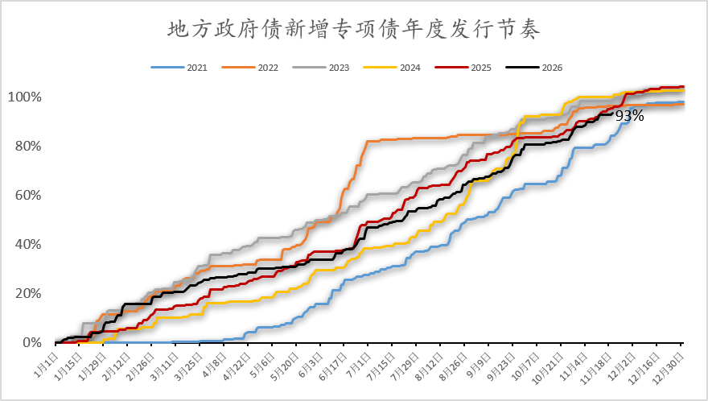
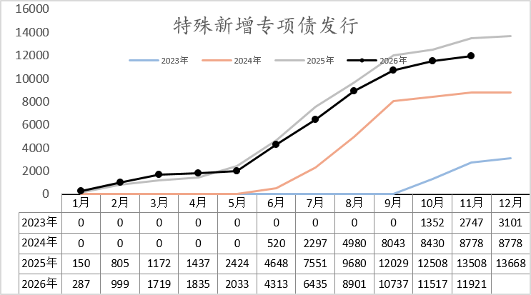
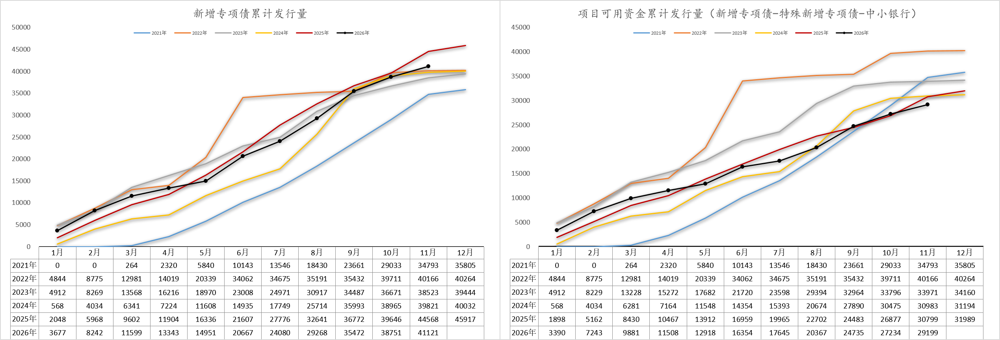
| 月份 | 制造业 | 制造业:农副食品加工业 | 制造业:纺织业 | 制造业:家具制造业 | 制造业:石油、煤炭及其他燃料加工业 | 制造业:化学原料及化学制品制造业 | 制造业:医药制造业 | 制造业:化学纤维制造业 | 制造业:橡胶和塑料制品业 | 制造业:非金属矿物制品业 | 制造业:黑色金属冶炼及压延加工业 | 制造业:有色金属冶炼及压延加工业 | 制造业:金属制品业 | 制造业:通用设备制造业 | 制造业:专用设备制造业 | 制造业:汽车制造业 | 制造业:铁路、船舶、航空航天和其他运输设备制造业 | 制造业:电气机械及器材制造业 | 制造业:计算机、通信和其他电子设备制造业 |
|---|---|---|---|---|---|---|---|---|---|---|---|---|---|---|---|---|---|---|---|
| 2025-09 | 4.00 | 14.30 | 11.20 | 10.80 | 20.70 | -5.60 | -9.90 | 11.60 | 7.30 | -6.60 | -2.00 | 0.40 | 5.90 | 11.80 | -0.70 | 19.20 | 22.30 | -9.50 | -2.10 |
| 2025-10 | 2.70 | 10.70 | 8.30 | 7.70 | 21.20 | -7.90 | -11.30 | 11.30 | 6.50 | -8.50 | -2.00 | -1.50 | 3.70 | 9.50 | -2.00 | 17.50 | 20.10 | -9.40 | -2.20 |
| 2025-11 | 1.90 | 9.60 | 5.80 | 4.80 | 23.60 | -8.20 | -13.10 | 12.10 | 3.40 | -9.50 | -1.30 | -2.20 | 2.10 | 8.90 | -4.00 | 15.30 | 22.40 | -9.50 | -3.20 |
| 2025-12 | 0.60 | 9.20 | 4.30 | 1.50 | 18.20 | -8.00 | -13.50 | 12.30 | 1.80 | -10.20 | -2.60 | -4.20 | -1.90 | 6.20 | -7.10 | 11.70 | 17.50 | -10.30 | -3.20 |
| 2026-01 | #N/A | #N/A | #N/A | #N/A | #N/A | #N/A | #N/A | #N/A | #N/A | #N/A | #N/A | #N/A | #N/A | #N/A | #N/A | #N/A | #N/A | #N/A | #N/A |
| 2026-02 | 3.10 | 11.20 | 18.80 | -6.30 | 10.00 | -5.40 | -2.80 | -11.90 | -0.80 | -8.60 | 4.30 | -9.20 | 7.40 | 7.00 | -0.50 | 2.60 | 31.10 | 5.80 | 1.20 |
| 2026-03 | 4.10 | 5.50 | 17.60 | -3.50 | -3.70 | 0.40 | -7.70 | -11.80 | -3.10 | -4.50 | -0.20 | 3.70 | 5.50 | 12.50 | -0.40 | 4.80 | 27.70 | 0.80 | 5.40 |
| 2026-04 | 1.20 | 2.60 | 12.10 | -7.20 | -5.30 | -3.60 | -7.80 | -14.10 | -4.70 | -8.80 | -1.90 | -0.90 | -1.40 | 5.50 | -6.00 | -0.50 | 24.70 | 2.90 | 5.40 |
| 2026-05 | -0.40 | 0.50 | 10.80 | -11.60 | -5.60 | -5.90 | -9.00 | -14.50 | -5.60 | -11.00 | -1.60 | -2.30 | -4.00 | 2.80 | -8.00 | -2.70 | 23.60 | 1.50 | 6.70 |
| 2026-06 | -1.20 | -1.90 | 9.40 | -16.90 | -5.70 | -6.50 | -9.20 | -13.00 | -7.10 | -11.90 | -4.90 | -4.10 | -5.50 | 1.90 | -8.60 | -4.20 | 24.70 | 1.20 | 6.50 |
| 2026-07 | -1.70 | -3.00 | 7.90 | -19.10 | -8.30 | -7.40 | -9.80 | -15.20 | -7.50 | -12.90 | -6.30 | -3.90 | -6.90 | 1.40 | -9.20 | -5.30 | 18.70 | 1.40 | 7.80 |
| 2026-08 | -2.30 | -2.00 | 5.40 | -16.30 | -9.40 | -8.10 | -8.30 | -9.50 | -6.00 | -13.90 | -6.70 | -4.10 | -8.90 | 0.90 | -9.00 | -6.00 | 16.30 | 0.80 | 8.10 |
| 2026-09 | -2.10 | -2.50 | 4.20 | -15.70 | -7.40 | -7.50 | -8.10 | -11.40 | -6.80 | -14.50 | -8.90 | -5.10 | -10.10 | 1.10 | -8.90 | -6.30 | 15.80 | 1.20 | 9.60 |
| 指标 | 单位 | 2026-10-31 | 2026-11-30 | 2026-12-31 | 2027-01-31 | 月环比(%) | 月同比(%) | 年度同比(%) |
|---|---|---|---|---|---|---|---|---|
| 产业在线：家用空调：计划产量：中国（月） | 万台 | 1,020.00 | 1,132.50 | 1,519.00 | 1,954.00 | +28.64 | +5.59 | #N/A |
| 产业在线：家用空调：计划内销量：中国（月） | 万台 | 510.00 | 476.00 | #N/A | #N/A | -6.67 | -10.22 | #N/A |
| 产业在线：家用空调：计划出口量：中国（月） | 万台 | 518.00 | 747.00 | #N/A | #N/A | +44.21 | +0.20 | #N/A |
| 产业在线：冰箱：计划产量：中国（月） | 万台 | 841.00 | 815.00 | #N/A | #N/A | -3.09 | +4.76 | #N/A |
| 产业在线：冰箱：计划内销量：中国（月） | 万台 | 393.00 | 343.00 | #N/A | #N/A | -12.72 | -8.78 | #N/A |
| 产业在线：冰箱：计划出口量：中国（月） | 万台 | 448.00 | 472.00 | #N/A | #N/A | +5.36 | +17.41 | #N/A |
| 产业在线：洗衣机：计划产量：中国（月） | 万台 | 856.80 | 812.00 | #N/A | #N/A | -5.23 | +2.40 | #N/A |
| 产业在线：空调+冰箱+洗衣机：计划产量：中国（月） | 万台 | 2,717.80 | 2,759.50 | #N/A | #N/A | +1.53 | -1.66 | #N/A |
| 分类／指标 | 2025-11 | 2025-12 | 2026-01 | 2026-02 | 2026-03 | 2026-04 | 2026-05 | 2026-06 | 2026-07 | 2026-08 | 2026-09 | 2026-10 |
|---|---|---|---|---|---|---|---|---|---|---|---|---|
| 宏观总量与基本面 | 制造业PMI | 49.2 | 50.1 | 49.3 | 49 | 50.4 | 50.3 | 50 | 50.3 | 49.2 | 49.8 | 50.1 | 49.3 |
| 宏观总量与基本面 | 非制造业商务活动 | 49.5 | 50.2 | 49.4 | 49.5 | 50.1 | 49.4 | 50.1 | 50.2 | 49 | 49 | 50.2 | 49.7 |
| 宏观总量与基本面 | 制造业生产经营预期 | 53.1 | 55.5 | 52.6 | 53.2 | 53.4 | 54.5 | 53.9 | 54.3 | 54.1 | 53.8 | 53.8 | 53.4 |
| 宏观总量与基本面 | 非制造业业务活动预期 | 56.2 | 56.5 | 56 | 55 | 54.2 | 54.7 | 54.8 | 55.3 | 55.4 | 55 | 55.5 | 54.7 |
| 库存周期与供需动能 | 新订单 | 49.2 | 50.8 | 49.2 | 48.6 | 51.6 | 50.6 | 49.9 | 51.2 | 48.5 | 50.6 | 50.5 | 49.4 |
| 库存周期与供需动能 | 新出口订单 | 47.6 | 49 | 47.8 | 45 | 49.1 | 50.3 | 48.6 | 50.1 | 49.6 | 50.1 | 50 | 48.7 |
| 库存周期与供需动能 | 在手订单 | 45.5 | 46 | 45.1 | 44 | 47.1 | 46.2 | 46.8 | 47.1 | 45.8 | 46.7 | 46 | 44.1 |
| 库存周期与供需动能 | 生产 | 50 | 51.7 | 50.6 | 49.6 | 51.4 | 51.5 | 51.2 | 51.4 | 49.9 | 50.4 | 51.7 | 49.8 |
| 库存周期与供需动能 | 采购量 | 49.5 | 51.1 | 48.7 | 48.2 | 50.9 | 51.1 | 49.8 | 51.4 | 49.4 | 50.5 | 51 | 48.9 |
| 库存周期与供需动能 | 进口 | 47 | 47 | 47.3 | 45.6 | 49.8 | 50.1 | 48.8 | 49.6 | 47.5 | 48.6 | 49.2 | 47 |
| 库存周期与供需动能 | 产成品库存 | 47.3 | 48.2 | 48.6 | 45.8 | 46.7 | 47.5 | 49.3 | 47.7 | 48.6 | 48.4 | 47.6 | 47.5 |
| 库存周期与供需动能 | 原材料库存 | 47.3 | 47.8 | 47.4 | 47.5 | 47.7 | 49.3 | 48.6 | 48.4 | 48.3 | 48.1 | 48.2 | 48.4 |
| 价格传导与利润再分配 | 主要原材料购进价格 | 53.6 | 53.1 | 56.1 | 54.8 | 63.9 | 63.7 | 60.5 | 54.2 | 53.2 | 56.6 | 60.8 | 56.8 |
| 价格传导与利润再分配 | 出厂价格 | 48.2 | 48.9 | 50.6 | 50.6 | 55.4 | 55.1 | 51.9 | 48.2 | 47.8 | 50.4 | 54 | 51.7 |
| 价格传导与利润再分配 | 非制造业投入品价格 | 50.4 | 50.2 | 50 | 50.9 | 52.3 | 51.7 | 52.2 | 49.7 | 49.7 | 51.1 | 52.5 | 51.5 |
| 价格传导与利润再分配 | 非制造业销售价格 | 49.1 | 48 | 48.8 | 48.8 | 49.9 | 48.1 | 48.8 | 48.4 | 47.9 | 49.3 | 50.3 | 49.5 |
| K型分化与结构撕裂 | 高技术制造业 | 50.1 | 52.5 | 52 | 51.5 | 52.1 | 52.2 | 52.9 | 53.5 | 53.3 | 52.9 | 52.5 | 51.3 |
| K型分化与结构撕裂 | 基础原材料行业 | 48.4 | 48.9 | 47.9 | 47.8 | 48.9 | 47.9 | 47.1 | 47.1 | 47 | 47.9 | 48 | 47.3 |
| K型分化与结构撕裂 | 装备制造业 | 49.8 | 50.4 | 50.1 | 49.8 | 51.5 | 51.8 | 52.1 | 52.5 | 51.4 | 51.4 | 51 | 50.6 |
| K型分化与结构撕裂 | 消费品行业 | 49.4 | 50.4 | 48.3 | 48.8 | 50.8 | 50.7 | 49.7 | 50.2 | 47.8 | 49 | 50.7 | 48.8 |
| K型分化与结构撕裂 | 建筑业商务活动 | 49.6 | 52.8 | 48.8 | 48.2 | 49.3 | 48 | 48.8 | 49 | 47 | 46.9 | 50.3 | 48 |
| K型分化与结构撕裂 | 服务业商务活动 | 49.5 | 49.7 | 49.5 | 49.7 | 50.2 | 49.6 | 50.3 | 50.4 | 49.3 | 49.3 | 50.2 | 50 |
| 分类／指标 | 2025-07 | 2025-08 | 2025-09 | 2025-10 | 2025-11 | 2025-12 | 2026-01 | 2026-02 | 2026-03 | 2026-04 | 2026-05 | 2026-06 | 2026-07 |
|---|---|---|---|---|---|---|---|---|---|---|---|---|---|
| 官方PMI | 49.3 | 49.4 | 49.8 | 49 | 49.2 | 50.1 | 49.3 | 49 | 50.4 | 50.3 | 50 | 50.3 | 49.2 |
| 财新 | 49.5 | 50.5 | 51.2 | 50.6 | 49.9 | 50.1 | 50.3 | 52.1 | 50.8 | 52.2 | 51.8 | 51.7 | #N/A |
| 中国：钢铁行业PMI：数值（月） | 50.5 | 49.8 | 47.7 | 49.2 | 48 | 46.3 | 49.9 | 46.7 | 50.6 | 49.2 | 47.9 | 47.8 | #N/A |
| 全球 | 49.7 | 50.9 | 50.7 | 50.9 | 50.5 | 50.4 | 50.9 | 51.8 | 51.3 | 52.6 | 52.7 | 52.2 | #N/A |
| 美国ISM | 48 | 48.7 | 49.1 | 48.7 | 48.2 | 47.9 | 52.6 | 52.4 | 52.7 | 52.7 | 54 | 53.3 | #N/A |
| 美国Markit | 49.8 | 53 | 52 | 52.5 | 52.2 | 51.8 | 52.4 | 51.6 | 52.3 | 54.5 | 55.1 | 53.9 | #N/A |
| 欧元区 | 49.8 | 50.7 | 49.8 | 50 | 49.6 | 48.8 | 49.5 | 50.8 | 51.6 | 52.2 | 51.6 | 51.4 | #N/A |
| 德国 | 49.1 | 49.8 | 49.5 | 49.6 | 48.2 | 47 | 49.1 | 50.9 | 52.2 | 51.4 | 50.1 | 50.3 | #N/A |
| 法国 | 48.2 | 50.4 | 48.2 | 48.8 | 47.8 | 50.7 | 51.2 | 50.1 | 50 | 52.8 | 49.7 | 51.2 | #N/A |
| 英国 | 48 | 47 | 46.2 | 49.7 | 50.2 | 50.6 | 51.8 | 51.7 | 51 | 53.7 | 53.9 | 52.5 | #N/A |
| 西班牙 | 51.9 | 54.3 | 51.5 | 52.1 | 51.5 | 49.6 | 49.2 | 50 | 48.7 | 51.7 | 51.2 | 49.7 | #N/A |
| 意大利 | 49.8 | 50.4 | 49 | 49.9 | 50.6 | 47.9 | 48.1 | 50.6 | 51.3 | 52.1 | 52.9 | 52.2 | #N/A |
| 希腊 | 51.7 | 54.5 | 52 | 53.5 | 52.7 | 52.9 | 54.2 | 54.4 | 54.5 | 52.4 | 53.3 | 53.8 | #N/A |
| 爱尔兰 | 53.2 | 51.6 | 51.8 | 50.9 | 52.8 | 52.2 | 52.2 | 53.1 | 53.7 | 54.9 | 55.9 | 54.9 | #N/A |
| 俄罗斯 | 47 | 48.7 | 48.2 | 48 | 48.3 | 48.1 | 49.4 | 49.5 | 48.3 | 48.1 | 48.8 | 50.3 | #N/A |
| 日本 | 48.9 | 49.7 | 48.5 | 48.2 | 48.7 | 50 | 51.5 | 53 | 51.6 | 55.1 | 54.5 | 54.8 | #N/A |
| 韩国 | 48 | 48.3 | 50.7 | 49.4 | 49.4 | 50.1 | 51.2 | 51.1 | 52.6 | 53.6 | 54.8 | 52.1 | #N/A |
| 印度 | 59.1 | 59.3 | 57.7 | 59.2 | 56.6 | 55 | 55.4 | 56.9 | 53.9 | 54.7 | 55 | 54.2 | #N/A |
| 越南 | 52.4 | 50.4 | 50.4 | 54.5 | 53.8 | 53 | 52.5 | 54.3 | 51.2 | 50.5 | 52.8 | 51.8 | #N/A |
| 印尼 | 49.2 | 51.5 | 50.4 | 51.2 | 53.3 | 51.2 | 52.6 | 53.8 | 50.1 | 49.1 | 50 | 46.9 | #N/A |
| 新加坡 | 49.9 | 50 | 50.1 | 50 | 50.2 | 50.3 | 50.5 | 50.6 | 50.5 | 50.7 | 51 | 51.3 | #N/A |
| 巴西 | 48.2 | 47.7 | 46.5 | 48.2 | 48.8 | 47.6 | 47 | 47.3 | 49 | 52.6 | 49.1 | 50.8 | #N/A |
| 南非 | 48 | 49.8 | 52.1 | 53.1 | 48.7 | 39.6 | 45.1 | 48.5 | 50.8 | 47.4 | 49.2 | 43.9 | #N/A |
| 指标 | 单位 | 2026-07-31 | 2026-08-31 | 2026-09-30 | 2026-10-31 | 月变化(点) | 上年同月变化(点) |
|---|---|---|---|---|---|---|---|
| 美国ISM制造业PMI | 点 | 55.60 | 54.60 | 54.50 | 55.50 | +1.00 | +6.80 |
| 美国ISM制造业新订单 | 点 | 56.70 | 53.70 | 55.30 | 55.50 | +0.20 | +6.10 |
| 美国ISM制造业新出口订单 | 点 | 53.00 | 53.20 | 50.90 | 51.20 | +0.30 | +6.70 |
| 美国ISM制造业积压订单 | 点 | 55.00 | 51.80 | 56.40 | 54.60 | -1.80 | +6.70 |
| 美国ISM制造业生产 | 点 | 58.50 | 58.30 | 56.70 | 59.00 | +2.30 | +10.80 |
| 美国ISM制造业就业 | 点 | 52.80 | 51.20 | 52.70 | 52.40 | -0.30 | +6.40 |
| 美国ISM制造业自有库存 | 点 | 51.20 | 50.60 | 48.60 | 51.40 | +2.80 | +5.60 |
| 美国ISM制造业价格 | 点 | 71.10 | 71.10 | 77.90 | 75.20 | -2.70 | +17.20 |
| 美国Markit制造业PMI（终值） | 点 | 53.90 | 53.90 | 55.90 | 54.90 | -1.00 | +2.40 |
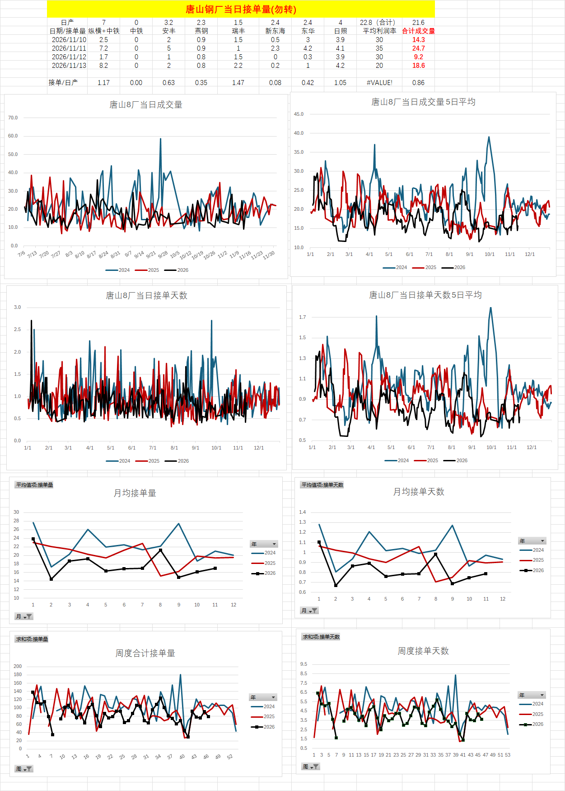
| 指标 | 单位 | 2026-10-16 | 2026-10-23 | 2026-10-30 | 2026-11-06 | 周环比(%) | 月同比(%) | 年同比(%) | 累计同比(%) |
|---|---|---|---|---|---|---|---|---|---|
| 钢材出港: 钢材国内主要港口出港汇总(32港) | 万吨 | 330.24 | 265.25 | 343.48 | 337.45 | -1.76 | +11.24 | +15.62 | -1.43 |
| 钢材出港: 国内港口出港汇总 | 万吨 | 330.24 | 265.25 | 343.48 | 337.45 | -1.76 | +11.24 | +12.23 | -3.32 |
| 指标 | 单位 | 2026-10-19 | 2026-10-26 | 2026-11-02 | 2026-11-09 | 周环比(%) | 月同比(%) | 年同比(%) | 累计同比(%) |
|---|---|---|---|---|---|---|---|---|---|
| 钢材出口接单-31家 | 吨 | 961,000.00 | 881,300.00 | 848,000.00 | 1,049,000.00 | +23.70 | -2.92 | +26.95 | #N/A |
| 钢材出口接单-31家-长材接单 | 吨 | 519,500.00 | 481,500.00 | 452,500.00 | 594,000.00 | +31.27 | +9.29 | #N/A | #N/A |
| 钢材出口接单-31家-板材接单 | 吨 | 441,500.00 | 399,800.00 | 395,500.00 | 455,000.00 | +15.04 | -15.29 | #N/A | #N/A |
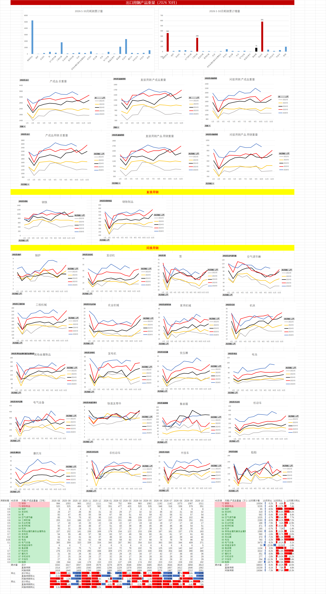
| 指标 | 单位 | 2026-10-02 | 2026-10-09 | 2026-10-16 | 2026-10-23 | 周环比(%) | 月同比(%) | 年同比(%) | 累计同比(%) |
|---|---|---|---|---|---|---|---|---|---|
| 钢材内贸到港: 总量 | 万吨 | 754.67 | 767.67 | 931.68 | 837.15 | -10.15 | +14.90 | +6.25 | +4.04 |
| 钢材内贸到港: 青岛 | 万吨 | 12.13 | 9.79 | 91.55 | 17.70 | -80.67 | +679.74 | +97.99 | +38.66 |
| 钢材内贸到港: 南京 | 万吨 | 19.60 | 14.05 | 20.79 | 16.51 | -20.59 | +19.38 | -41.45 | -7.56 |
| 钢材内贸到港: 太仓港 | 万吨 | 6.65 | 13.37 | 4.50 | 9.04 | +100.89 | -40.33 | -40.76 | +13.46 |
| 钢材内贸到港: 宁波 | 万吨 | 8.46 | 15.01 | 1.57 | 9.38 | +497.45 | +9.07 | -6.67 | -4.82 |
| 钢材内贸到港: 嘉兴 | 万吨 | 7.20 | 23.76 | 15.18 | 13.54 | -10.80 | +28.10 | +29.94 | +7.17 |
| 钢材内贸到港: 连云港 | 万吨 | 8.99 | 7.93 | 21.82 | 5.56 | -74.52 | -47.10 | -22.24 | -1.01 |
| 钢材内贸到港: 张家港 | 万吨 | 15.38 | 11.64 | 15.99 | 7.13 | -55.41 | +39.26 | -46.83 | -4.55 |
| 钢材内贸到港: 镇江 | 万吨 | 13.90 | 21.39 | 16.41 | 17.16 | +4.57 | -21.57 | -33.92 | +9.03 |
| 钢材内贸到港: 扬州 | 万吨 | 42.36 | 36.09 | 40.30 | 65.39 | +62.26 | -8.12 | +44.51 | +47.90 |
| 钢材内贸到港: 芜湖 | 万吨 | 75.65 | 60.83 | 95.00 | 80.80 | -14.95 | +27.14 | -21.68 | -39.48 |
| 钢材内贸到港: 南通 | 万吨 | 19.19 | 19.52 | 18.11 | 35.91 | +98.29 | -9.00 | +33.25 | +0.07 |
| 钢材内贸到港: 泰州港 | 万吨 | 31.54 | 25.20 | 51.62 | 24.96 | -51.65 | -43.07 | -50.54 | -8.35 |
| 钢材内贸到港: 罗泾港 | 万吨 | 25.43 | 31.98 | 22.88 | 27.70 | +21.07 | -14.53 | -37.07 | -1.83 |
| 钢材内贸到港: 江阴 | 万吨 | 23.46 | 28.74 | 26.41 | 36.63 | +38.70 | +20.69 | +16.88 | +14.33 |
| 钢材内贸到港: 广州 | 万吨 | 33.33 | 28.99 | 27.21 | 41.91 | +54.02 | +100.24 | +22.54 | -23.45 |
| 钢材内贸到港: 上海 | 万吨 | 156.58 | 157.31 | 174.79 | 158.20 | -9.49 | +11.55 | +44.24 | +17.24 |
| 指标 | 单位 | 2026-07-31 | 2026-08-07 | 2026-08-14 | 2026-08-21 | 周环比(%) | 月同比(%) | 年同比(%) | 累计同比(%) |
|---|---|---|---|---|---|---|---|---|---|
| 全球钢材到港: 欧盟27国 | 万吨 | 29.95 | 19.25 | 25.56 | 43.88 | +71.67 | +121.50 | +17.67 | -11.76 |
| 全球钢材到港: 大洋洲 | 万吨 | 4.05 | 6.00 | 5.86 | 20.78 | +254.61 | +455.61 | #N/A | +26.55 |
| 全球钢材到港: 非洲 | 万吨 | 69.17 | 67.46 | 70.67 | 60.14 | -14.90 | +8.20 | -11.62 | +8.94 |
| 全球钢材到港: 欧洲 | 万吨 | 31.75 | 22.02 | 27.54 | 51.64 | +87.51 | +140.19 | +20.49 | -14.00 |
| 全球钢材到港: 南美洲 | 万吨 | 56.21 | 39.36 | 20.94 | 34.55 | +65.00 | +31.52 | -7.30 | +11.87 |
| 全球钢材到港: 北美洲 | 万吨 | 28.46 | 41.54 | 31.79 | 60.26 | +89.56 | +32.21 | -20.32 | -16.02 |
| 全球钢材到港: 东南亚 | 万吨 | 106.34 | 107.82 | 94.95 | 87.37 | -7.98 | -4.27 | +27.31 | +2.50 |
| 全球钢材到港: 东亚 | 万吨 | 108.11 | 121.04 | 61.67 | 100.78 | +63.42 | -2.04 | -14.19 | -9.45 |
| 全球钢材到港: 南亚 | 万吨 | 72.46 | 55.74 | 38.00 | 40.68 | +7.05 | -10.65 | +86.86 | +4.77 |
| 全球钢材到港: 中东 | 万吨 | 66.81 | 72.48 | 51.05 | 42.54 | -16.67 | -27.32 | -49.04 | -25.37 |
| 全球钢材到港: 越南 | 万吨 | 41.31 | 36.66 | 33.64 | 28.80 | -14.39 | +36.95 | +51.26 | -14.68 |
| 全球钢材到港: 韩国 | 万吨 | 23.81 | 34.93 | 32.71 | 17.13 | -47.63 | -19.62 | +4.13 | -3.58 |
| 全球钢材到港: 印度尼西亚 | 万吨 | 12.31 | 11.59 | 13.68 | 10.75 | -21.42 | -62.01 | -32.01 | +9.11 |
| 全球钢材到港: 沙特阿拉伯 | 万吨 | 9.73 | 16.96 | 0.00 | 8.39 | #N/A | -26.53 | -56.57 | -26.74 |
| 全球钢材到港: 阿联酋 | 万吨 | 7.56 | 9.36 | 11.68 | 0.00 | -100.00 | -100.00 | -100.00 | -54.17 |
| 全球钢材到港: 菲律宾 | 万吨 | 5.68 | 19.43 | 5.69 | 9.84 | +72.93 | +8.01 | +147.24 | +6.25 |
| 全球钢材到港: 土耳其 | 万吨 | 37.83 | 21.87 | 37.35 | 12.46 | -66.64 | -63.11 | -58.40 | -12.79 |
| 全球钢材到港: 泰国 | 万吨 | 19.29 | 13.45 | 14.45 | 22.53 | +55.92 | +117.26 | +149.78 | +2.20 |
| 全球钢材到港: 美国 | 万吨 | 13.10 | 36.39 | 17.33 | 39.38 | +127.24 | +32.41 | -27.84 | -26.28 |
| 全球钢材到港: 印度 | 万吨 | 35.37 | 32.24 | 33.57 | 24.81 | -26.09 | -8.18 | +30.92 | +22.36 |
| 全球钢材到港: 马来西亚 | 万吨 | 10.46 | 25.37 | 19.14 | 4.68 | -75.55 | -67.09 | -66.50 | +13.45 |
| 全球钢材到港: 中国台湾 | 万吨 | 15.42 | 23.89 | 5.30 | 18.29 | +245.09 | +13.32 | -32.28 | -23.19 |
| 全球钢材到港: 巴西 | 万吨 | 3.18 | 12.08 | 8.15 | 6.34 | -22.21 | +99.37 | -71.65 | -34.66 |
| 全球钢材到港: 日本 | 万吨 | 17.88 | 16.33 | 11.09 | 14.80 | +33.45 | -24.18 | -31.70 | -1.41 |
| 全球钢材到港: 尼日利亚 | 万吨 | 7.37 | 6.36 | 11.25 | 0.00 | -100.00 | -100.00 | -100.00 | +58.49 |
| 全球钢材到港: 秘鲁 | 万吨 | 11.54 | 5.57 | 2.13 | 9.40 | +341.31 | +193.75 | +11.37 | +55.48 |
| 全球钢材到港: 智利 | 万吨 | 2.92 | 1.95 | 1.96 | 0.00 | -100.00 | -100.00 | -100.00 | -15.68 |
| 全球钢材到港: 墨西哥 | 万吨 | 5.34 | 0.00 | 5.30 | 5.95 | +12.26 | +7.59 | -69.22 | -11.60 |
| 全球钢材到港: 新加坡 | 万吨 | 17.29 | 0.00 | 7.19 | 7.02 | -2.36 | -14.81 | +3.08 | +9.10 |